all_autosomes
Andy Beck
2024-11-12
Last updated: 2025-09-03
Checks: 7 0
Knit directory: phasing_clean/
This reproducible R Markdown analysis was created with workflowr (version 1.7.1). The Checks tab describes the reproducibility checks that were applied when the results were created. The Past versions tab lists the development history.
Great! Since the R Markdown file has been committed to the Git repository, you know the exact version of the code that produced these results.
Great job! The global environment was empty. Objects defined in the global environment can affect the analysis in your R Markdown file in unknown ways. For reproduciblity it’s best to always run the code in an empty environment.
The command set.seed(20240501) was run prior to running
the code in the R Markdown file. Setting a seed ensures that any results
that rely on randomness, e.g. subsampling or permutations, are
reproducible.
Great job! Recording the operating system, R version, and package versions is critical for reproducibility.
Nice! There were no cached chunks for this analysis, so you can be confident that you successfully produced the results during this run.
Great job! Using relative paths to the files within your workflowr project makes it easier to run your code on other machines.
Great! You are using Git for version control. Tracking code development and connecting the code version to the results is critical for reproducibility.
The results in this page were generated with repository version f39dfc8. See the Past versions tab to see a history of the changes made to the R Markdown and HTML files.
Note that you need to be careful to ensure that all relevant files for
the analysis have been committed to Git prior to generating the results
(you can use wflow_publish or
wflow_git_commit). workflowr only checks the R Markdown
file, but you know if there are other scripts or data files that it
depends on. Below is the status of the Git repository when the results
were generated:
Ignored files:
Ignored: .Rhistory
Ignored: .Rproj.user/
Ignored: .ipynb_checkpoints/
Ignored: data/1kgp/ann_vcf/
Ignored: data/1kgp/chr1/
Ignored: data/1kgp/chr10/
Ignored: data/1kgp/chr11/
Ignored: data/1kgp/chr12/
Ignored: data/1kgp/chr13/
Ignored: data/1kgp/chr14/
Ignored: data/1kgp/chr15/
Ignored: data/1kgp/chr16/
Ignored: data/1kgp/chr17/
Ignored: data/1kgp/chr18/
Ignored: data/1kgp/chr19/
Ignored: data/1kgp/chr2/
Ignored: data/1kgp/chr20/
Ignored: data/1kgp/chr21/
Ignored: data/1kgp/chr22/
Ignored: data/1kgp/chr3/
Ignored: data/1kgp/chr4/
Ignored: data/1kgp/chr5/
Ignored: data/1kgp/chr6/
Ignored: data/1kgp/chr7/
Ignored: data/1kgp/chr8/
Ignored: data/1kgp/chr9/
Ignored: data/1kgp/exclude_samples/
Ignored: data/chr1.1kb.sorted.bed
Ignored: data/chr1.fasta
Ignored: data/chr1.fasta.fai
Ignored: data/chr1.sizes
Ignored: data/chr10.1kb.sorted.bed
Ignored: data/chr10.fasta
Ignored: data/chr10.fasta.fai
Ignored: data/chr10.sizes
Ignored: data/chr10_10k.bed
Ignored: data/chr10_gc1kb.bed
Ignored: data/chr10_gc1kb_noMask.bed
Ignored: data/chr10_gc1kb_pilot.bed
Ignored: data/chr10_mask.fasta
Ignored: data/chr10_mask.fasta.fai
Ignored: data/chr11.1kb.sorted.bed
Ignored: data/chr11.fasta
Ignored: data/chr11.fasta.fai
Ignored: data/chr11.sizes
Ignored: data/chr11_10k.bed
Ignored: data/chr11_gc1kb.bed
Ignored: data/chr11_gc1kb_noMask.bed
Ignored: data/chr11_gc1kb_pilot.bed
Ignored: data/chr11_mask.fasta
Ignored: data/chr11_mask.fasta.fai
Ignored: data/chr12.1kb.sorted.bed
Ignored: data/chr12.fasta
Ignored: data/chr12.fasta.fai
Ignored: data/chr12.sizes
Ignored: data/chr12_10k.bed
Ignored: data/chr12_gc1kb.bed
Ignored: data/chr12_gc1kb_noMask.bed
Ignored: data/chr12_gc1kb_pilot.bed
Ignored: data/chr12_mask.fasta
Ignored: data/chr12_mask.fasta.fai
Ignored: data/chr13.1kb.sorted.bed
Ignored: data/chr13.fasta
Ignored: data/chr13.fasta.fai
Ignored: data/chr13.sizes
Ignored: data/chr13_10k.bed
Ignored: data/chr13_gc1kb.bed
Ignored: data/chr13_gc1kb_noMask.bed
Ignored: data/chr13_gc1kb_pilot.bed
Ignored: data/chr13_mask.fasta
Ignored: data/chr13_mask.fasta.fai
Ignored: data/chr14.1kb.sorted.bed
Ignored: data/chr14.fasta
Ignored: data/chr14.fasta.fai
Ignored: data/chr14.sizes
Ignored: data/chr14_10k.bed
Ignored: data/chr14_gc1kb.bed
Ignored: data/chr14_gc1kb_noMask.bed
Ignored: data/chr14_gc1kb_pilot.bed
Ignored: data/chr14_mask.fasta
Ignored: data/chr14_mask.fasta.fai
Ignored: data/chr15.1kb.sorted.bed
Ignored: data/chr15.fasta
Ignored: data/chr15.fasta.fai
Ignored: data/chr15.sizes
Ignored: data/chr15_10k.bed
Ignored: data/chr15_gc1kb.bed
Ignored: data/chr15_gc1kb_noMask.bed
Ignored: data/chr15_gc1kb_pilot.bed
Ignored: data/chr15_mask.fasta
Ignored: data/chr15_mask.fasta.fai
Ignored: data/chr16.1kb.sorted.bed
Ignored: data/chr16.fasta
Ignored: data/chr16.fasta.fai
Ignored: data/chr16.sizes
Ignored: data/chr16_10k.bed
Ignored: data/chr16_gc1kb.bed
Ignored: data/chr16_gc1kb_noMask.bed
Ignored: data/chr16_gc1kb_pilot.bed
Ignored: data/chr16_mask.fasta
Ignored: data/chr16_mask.fasta.fai
Ignored: data/chr17.1kb.sorted.bed
Ignored: data/chr17.fasta
Ignored: data/chr17.fasta.fai
Ignored: data/chr17.sizes
Ignored: data/chr17_10k.bed
Ignored: data/chr17_gc1kb.bed
Ignored: data/chr17_gc1kb_noMask.bed
Ignored: data/chr17_gc1kb_pilot.bed
Ignored: data/chr17_mask.fasta
Ignored: data/chr17_mask.fasta.fai
Ignored: data/chr18.1kb.sorted.bed
Ignored: data/chr18.fasta
Ignored: data/chr18.fasta.fai
Ignored: data/chr18.sizes
Ignored: data/chr18_10k.bed
Ignored: data/chr18_gc1kb.bed
Ignored: data/chr18_gc1kb_noMask.bed
Ignored: data/chr18_gc1kb_pilot.bed
Ignored: data/chr18_mask.fasta
Ignored: data/chr18_mask.fasta.fai
Ignored: data/chr19.1kb.sorted.bed
Ignored: data/chr19.fasta
Ignored: data/chr19.fasta.fai
Ignored: data/chr19.sizes
Ignored: data/chr19_10k.bed
Ignored: data/chr19_gc1kb.bed
Ignored: data/chr19_gc1kb_noMask.bed
Ignored: data/chr19_gc1kb_pilot.bed
Ignored: data/chr19_mask.fasta
Ignored: data/chr19_mask.fasta.fai
Ignored: data/chr1_10k.bed
Ignored: data/chr1_gc1kb.bed
Ignored: data/chr1_gc1kb_noMask.bed
Ignored: data/chr1_gc1kb_pilot.bed
Ignored: data/chr1_mask.fasta
Ignored: data/chr1_mask.fasta.fai
Ignored: data/chr2.1kb.sorted.bed
Ignored: data/chr2.fasta
Ignored: data/chr2.fasta.fai
Ignored: data/chr2.sizes
Ignored: data/chr20.1kb.sorted.bed
Ignored: data/chr20.fasta
Ignored: data/chr20.fasta.fai
Ignored: data/chr20.sizes
Ignored: data/chr20_10k.bed
Ignored: data/chr20_gc1kb.bed
Ignored: data/chr20_gc1kb_noMask.bed
Ignored: data/chr20_gc1kb_pilot.bed
Ignored: data/chr20_mask.fasta
Ignored: data/chr20_mask.fasta.fai
Ignored: data/chr21.1kb.sorted.bed
Ignored: data/chr21.fasta
Ignored: data/chr21.fasta.fai
Ignored: data/chr21.sizes
Ignored: data/chr21_10k.bed
Ignored: data/chr21_gc1kb.bed
Ignored: data/chr21_gc1kb_noMask.bed
Ignored: data/chr21_gc1kb_pilot.bed
Ignored: data/chr21_mask.fasta
Ignored: data/chr21_mask.fasta.fai
Ignored: data/chr22.1kb.sorted.bed
Ignored: data/chr22.fasta
Ignored: data/chr22.fasta.fai
Ignored: data/chr22.sizes
Ignored: data/chr22_10k.bed
Ignored: data/chr22_gc1kb.bed
Ignored: data/chr22_gc1kb_noMask.bed
Ignored: data/chr22_gc1kb_pilot.bed
Ignored: data/chr22_mask.fasta
Ignored: data/chr22_mask.fasta.fai
Ignored: data/chr22_mask.fasta.fxi
Ignored: data/chr2_10k.bed
Ignored: data/chr2_gc1kb.bed
Ignored: data/chr2_gc1kb_noMask.bed
Ignored: data/chr2_gc1kb_pilot.bed
Ignored: data/chr2_mask.fasta
Ignored: data/chr2_mask.fasta.fai
Ignored: data/chr3.1kb.sorted.bed
Ignored: data/chr3.fasta
Ignored: data/chr3.fasta.fai
Ignored: data/chr3.sizes
Ignored: data/chr3_10k.bed
Ignored: data/chr3_gc1kb.bed
Ignored: data/chr3_gc1kb_noMask.bed
Ignored: data/chr3_gc1kb_pilot.bed
Ignored: data/chr3_mask.fasta
Ignored: data/chr3_mask.fasta.fai
Ignored: data/chr4.1kb.sorted.bed
Ignored: data/chr4.fasta
Ignored: data/chr4.fasta.fai
Ignored: data/chr4.sizes
Ignored: data/chr4_10k.bed
Ignored: data/chr4_gc1kb.bed
Ignored: data/chr4_gc1kb_noMask.bed
Ignored: data/chr4_gc1kb_pilot.bed
Ignored: data/chr4_mask.fasta
Ignored: data/chr4_mask.fasta.fai
Ignored: data/chr5.1kb.sorted.bed
Ignored: data/chr5.fasta
Ignored: data/chr5.fasta.fai
Ignored: data/chr5.sizes
Ignored: data/chr5_10k.bed
Ignored: data/chr5_gc1kb.bed
Ignored: data/chr5_gc1kb_noMask.bed
Ignored: data/chr5_gc1kb_pilot.bed
Ignored: data/chr5_mask.fasta
Ignored: data/chr5_mask.fasta.fai
Ignored: data/chr6.1kb.sorted.bed
Ignored: data/chr6.fasta
Ignored: data/chr6.fasta.fai
Ignored: data/chr6.sizes
Ignored: data/chr6_10k.bed
Ignored: data/chr6_gc1kb.bed
Ignored: data/chr6_gc1kb_noMask.bed
Ignored: data/chr6_gc1kb_pilot.bed
Ignored: data/chr6_mask.fasta
Ignored: data/chr6_mask.fasta.fai
Ignored: data/chr7.1kb.sorted.bed
Ignored: data/chr7.fasta
Ignored: data/chr7.fasta.fai
Ignored: data/chr7.sizes
Ignored: data/chr7_10k.bed
Ignored: data/chr7_gc1kb.bed
Ignored: data/chr7_gc1kb_noMask.bed
Ignored: data/chr7_gc1kb_pilot.bed
Ignored: data/chr7_mask.fasta
Ignored: data/chr7_mask.fasta.fai
Ignored: data/chr8.1kb.sorted.bed
Ignored: data/chr8.fasta
Ignored: data/chr8.fasta.fai
Ignored: data/chr8.sizes
Ignored: data/chr8_10k.bed
Ignored: data/chr8_gc1kb.bed
Ignored: data/chr8_gc1kb_noMask.bed
Ignored: data/chr8_gc1kb_pilot.bed
Ignored: data/chr8_mask.fasta
Ignored: data/chr8_mask.fasta.fai
Ignored: data/chr9.1kb.sorted.bed
Ignored: data/chr9.fasta
Ignored: data/chr9.fasta.fai
Ignored: data/chr9.sizes
Ignored: data/chr9_10k.bed
Ignored: data/chr9_gc1kb.bed
Ignored: data/chr9_gc1kb_noMask.bed
Ignored: data/chr9_gc1kb_pilot.bed
Ignored: data/chr9_mask.fasta
Ignored: data/chr9_mask.fasta.fai
Ignored: data/chrX.1kb.sorted.bed
Ignored: data/chrX.fasta
Ignored: data/chrX.fasta.fai
Ignored: data/chrX.sizes
Ignored: data/chrX_gc1kb.bed
Ignored: data/chrX_gc1kb_pilot.bed
Ignored: data/chrX_mask.fasta
Ignored: data/chrX_mask.fasta.fai
Ignored: data/decode/
Ignored: data/hg38.chrom.sizes
Ignored: data/mask_pilot_10_fasta.bed
Ignored: data/mask_pilot_11_fasta.bed
Ignored: data/mask_pilot_12_fasta.bed
Ignored: data/mask_pilot_13_fasta.bed
Ignored: data/mask_pilot_14_fasta.bed
Ignored: data/mask_pilot_15_fasta.bed
Ignored: data/mask_pilot_16_fasta.bed
Ignored: data/mask_pilot_17_fasta.bed
Ignored: data/mask_pilot_18_fasta.bed
Ignored: data/mask_pilot_19_fasta.bed
Ignored: data/mask_pilot_1_fasta.bed
Ignored: data/mask_pilot_20_fasta.bed
Ignored: data/mask_pilot_21_fasta.bed
Ignored: data/mask_pilot_22_fasta.bed
Ignored: data/mask_pilot_2_fasta.bed
Ignored: data/mask_pilot_3_fasta.bed
Ignored: data/mask_pilot_4_fasta.bed
Ignored: data/mask_pilot_5_fasta.bed
Ignored: data/mask_pilot_6_fasta.bed
Ignored: data/mask_pilot_7_fasta.bed
Ignored: data/mask_pilot_8_fasta.bed
Ignored: data/mask_pilot_9_fasta.bed
Ignored: data/ref_GRCh38.fna
Ignored: data/ref_GRCh38.fna.fai
Ignored: data/ref_GRCh38.fna.in
Ignored: data/ref_maps/
Ignored: output/alt_ref/
Ignored: output/slurm/
Ignored: output/switch_errors/
Ignored: output/trio_phase_1/
Ignored: output/trio_phase_10/
Ignored: output/trio_phase_11/
Ignored: output/trio_phase_12/
Ignored: output/trio_phase_13/
Ignored: output/trio_phase_14/
Ignored: output/trio_phase_15/
Ignored: output/trio_phase_16/
Ignored: output/trio_phase_17/
Ignored: output/trio_phase_18/
Ignored: output/trio_phase_19/
Ignored: output/trio_phase_2/
Ignored: output/trio_phase_20/
Ignored: output/trio_phase_21/
Ignored: output/trio_phase_22/
Ignored: output/trio_phase_3/
Ignored: output/trio_phase_4/
Ignored: output/trio_phase_5/
Ignored: output/trio_phase_6/
Ignored: output/trio_phase_7/
Ignored: output/trio_phase_8/
Ignored: output/trio_phase_9/
Ignored: output/vote_1/
Ignored: output/vote_10/
Ignored: output/vote_11/
Ignored: output/vote_12/
Ignored: output/vote_13/
Ignored: output/vote_14/
Ignored: output/vote_15/
Ignored: output/vote_16/
Ignored: output/vote_17/
Ignored: output/vote_18/
Ignored: output/vote_19/
Ignored: output/vote_2/
Ignored: output/vote_20/
Ignored: output/vote_21/
Ignored: output/vote_22/
Ignored: output/vote_3/
Ignored: output/vote_4/
Ignored: output/vote_5/
Ignored: output/vote_6/
Ignored: output/vote_7/
Ignored: output/vote_8/
Ignored: output/vote_9/
Ignored: output/vote_x/
Ignored: scratch/
Untracked files:
Untracked: .lintr.R
Untracked: Rplots.pdf
Untracked: code/figures/
Untracked: code/tables_results/
Untracked: code/trio_phase_summary.R
Untracked: test.log
Unstaged changes:
Modified: analysis/errors_per_bin.Rmd
Modified: analysis/synthetic_diploid_results.Rmd
Modified: code/trio_phase_results.R
Note that any generated files, e.g. HTML, png, CSS, etc., are not included in this status report because it is ok for generated content to have uncommitted changes.
These are the previous versions of the repository in which changes were
made to the R Markdown (analysis/all_autosomes.Rmd) and
HTML (docs/all_autosomes.html) files. If you’ve configured
a remote Git repository (see ?wflow_git_remote), click on
the hyperlinks in the table below to view the files as they were in that
past version.
| File | Version | Author | Date | Message |
|---|---|---|---|---|
| Rmd | f39dfc8 | theandyb | 2025-09-03 | wflow_publish("analysis/all_autosomes.Rmd") |
| Rmd | f84ef9e | theandyb | 2025-05-06 | 6april25 |
| html | 1bb140b | Andy Beck | 2024-11-15 | Build site. |
| Rmd | 159d694 | Andy Beck | 2024-11-15 | wflow_publish("analysis/all_autosomes.Rmd") |
| html | c2bf5b8 | Andy Beck | 2024-11-15 | Build site. |
| Rmd | 77190d7 | Andy Beck | 2024-11-15 | wflow_publish("analysis/all_autosomes.Rmd") |
| html | 62ef498 | Andy Beck | 2024-11-14 | Build site. |
| Rmd | c3ee9da | Andy Beck | 2024-11-14 | wflow_publish("analysis/all_autosomes.Rmd") |
| html | 0677ea9 | Andy Beck | 2024-11-14 | Build site. |
| Rmd | 0ddbe2d | Andy Beck | 2024-11-14 | wflow_publish("analysis/all_autosomes.Rmd") |
| html | 168daa5 | Andy Beck | 2024-11-14 | Build site. |
| Rmd | f42a981 | Andy Beck | 2024-11-14 | wflow_publish("analysis/all_autosomes.Rmd") |
| html | e150fe1 | Andy Beck | 2024-11-14 | Build site. |
| Rmd | 311032c | Andy Beck | 2024-11-14 | wflow_publish("analysis/all_autosomes.Rmd") |
| html | 751e6f6 | Andy Beck | 2024-11-12 | Build site. |
| Rmd | eb2d061 | Andy Beck | 2024-11-12 | wflow_publish(c("analysis/index.Rmd", "analysis/all_autosomes.Rmd")) |
| html | 8c98a47 | Andy Beck | 2024-11-12 | Build site. |
| Rmd | 9d32a06 | Andy Beck | 2024-11-12 | wflow_publish("analysis/all_autosomes.Rmd") |
| html | d293dde | Andy Beck | 2024-11-12 | Build site. |
| Rmd | 5af62e3 | Andy Beck | 2024-11-12 | wflow_publish("analysis/all_autosomes.Rmd") |
| html | 6a3ec67 | Andy Beck | 2024-11-12 | Build site. |
| Rmd | e28dbf2 | Andy Beck | 2024-11-12 | wflow_publish("analysis/all_autosomes.Rmd") |
Introduction
Here in this document we will generate results for the rephrasing of probands from 602 trios along all 22 autosomes. We’ll also compare rates of errors in the autosomes to what we observe in phasing 2000 X chromsome synthetic diploids.
library(tidyverse)── Attaching core tidyverse packages ──────────────────────── tidyverse 2.0.0 ──
✔ dplyr 1.1.4 ✔ readr 2.1.5
✔ forcats 1.0.0 ✔ stringr 1.5.1
✔ ggplot2 3.5.2 ✔ tibble 3.2.1
✔ lubridate 1.9.4 ✔ tidyr 1.3.1
✔ purrr 1.0.4
── Conflicts ────────────────────────────────────────── tidyverse_conflicts() ──
✖ dplyr::filter() masks stats::filter()
✖ dplyr::lag() masks stats::lag()
ℹ Use the conflicted package (<http://conflicted.r-lib.org/>) to force all conflicts to become errorslibrary(yaml)
library(gtsummary)
library(grid)
library(gridExtra)
Attaching package: 'gridExtra'
The following object is masked from 'package:dplyr':
combinetheme_linedraw_blank <- function(base_size = 11, base_family = "", base_line_size = base_size/22, base_rect_size = base_size/22) {
theme_linedraw(
base_size = base_size,
base_family = base_family,
base_line_size = base_line_size,
base_rect_size = base_rect_size
) %+replace%
theme(
panel.grid.major = element_blank(),
panel.grid.minor = element_blank()
)
}
config_obj <- yaml::read_yaml("_config.yaml")
cbPalette <- c("#999999", "#E69F00", "#56B4E9", "#009E73", "#F0E442", "#0072B2", "#D55E00", "#CC79A7")
theme_set(theme_linedraw_blank())
df_subj <- read_csv("data/1kgp/subject_info.csv")Rows: 3202 Columns: 6
── Column specification ────────────────────────────────────────────────────────
Delimiter: ","
chr (5): SAMPLE_NAME, POPULATION, SUPER, fatherID, motherID
dbl (1): sex
ℹ Use `spec()` to retrieve the full column specification for this data.
ℹ Specify the column types or set `show_col_types = FALSE` to quiet this message.ped_df <- read_table("data/1kgp/1kGP.3202_samples.pedigree_info.txt")
── Column specification ────────────────────────────────────────────────────────
cols(
sampleID = col_character(),
fatherID = col_character(),
motherID = col_character(),
sex = col_double()
)child_ids <- ped_df %>% filter(fatherID != "0" & motherID != "0") %>% pull(sampleID)
unrel_ids <- scan("data/1kgp/unrelated_subjects.txt", what = character())
df_subj_rel <- df_subj %>%
filter(SAMPLE_NAME %in% child_ids)
df_subj_rel$id <- 1:602
df_subj_unrel <- df_subj %>%
filter(SAMPLE_NAME %in% unrel_ids)
df_chrom_size <- read_tsv("data/hg38.chrom.sizes", n_max = 24, col_names = c("chrom", "bases"))Rows: 24 Columns: 2
── Column specification ────────────────────────────────────────────────────────
Delimiter: "\t"
chr (1): chrom
dbl (1): bases
ℹ Use `spec()` to retrieve the full column specification for this data.
ℹ Specify the column types or set `show_col_types = FALSE` to quiet this message.pair_info_df <- read_delim("data/sample_pairs.csv", col_names = c("POP", "ID1", "ID2"))Rows: 1000 Columns: 3
── Column specification ────────────────────────────────────────────────────────
Delimiter: ","
chr (3): POP, ID1, ID2
ℹ Use `spec()` to retrieve the full column specification for this data.
ℹ Specify the column types or set `show_col_types = FALSE` to quiet this message.pair_info_df <- left_join(pair_info_df, {df_subj %>% select(SAMPLE_NAME, POPULATION, SUPER)}, by = c("ID1"="SAMPLE_NAME")) %>%
select(-POPULATION)
pair_info_df$id <- 1:1000Data Reading
# Load the heterozygous positions for a single individual
load_het_pos <- function(id, het_loc){
f_name <- paste0(het_loc, "errors_", id, ".csv")
df <- read_csv(f_name, show_col_types = F)
df
}
# get error rates for individual subject
single_summary <- function(id, het_loc){
df <- load_het_pos(id, het_loc)
df %>%
summarize(n_het = n(),
n_het_cpg = sum(cpg),
switch_b = sum(beagle_switch),
switch_e = sum(eagle_switch),
switch_s = sum(shapeit_switch),
flip_b = sum(beagle_flip),
flip_e = sum(eagle_flip),
flip_s = sum(shapeit_flip),
cpg_switch_b = sum(beagle_switch * cpg),
cpg_switch_e = sum(eagle_switch * cpg),
cpg_switch_s = sum(shapeit_switch * cpg),
cpg_flip_b = sum(beagle_flip * cpg),
cpg_flip_e = sum(eagle_flip * cpg),
cpg_flip_s = sum(shapeit_flip * cpg)) %>%
mutate(r_switch_b = switch_b / n_het,
r_switch_e = switch_e / n_het,
r_switch_s = switch_s / n_het,
r_flip_b = flip_b / n_het,
r_flip_e = flip_e / n_het,
r_flip_s = flip_s / n_het,
r_cpg_switch_b = cpg_switch_b / n_het_cpg,
r_cpg_switch_e = cpg_switch_e / n_het_cpg,
r_cpg_switch_s = cpg_switch_s / n_het_cpg,
r_cpg_flip_b = cpg_flip_b / n_het_cpg,
r_cpg_flip_e = cpg_flip_e / n_het_cpg,
r_cpg_flip_s = cpg_flip_s / n_het_cpg
)
}
all_summary <- function(ids, het_loc){
results <- vector(mode = "list", length = length(ids))
for(i in 1:length(ids)){
results[[i]] <- single_summary(ids[i], het_loc)
results[[i]]$id <- ids[i]
}
return(bind_rows(results))
}
load_premade_summary <- function(res_dir){
f_name <- paste0(res_dir, "switch_errors/summary.csv")
read_csv(f_name, show_col_types = F)
}Summary of all autosomes
# df_2 <- all_summary(1:602, "output/trio_phase_1/het_loc/annotated/")
# df_2 <- df_2 %>%
# left_join({df_subj_rel %>% select(SUPER, sex, id2) %>% rename(id=id2, pop = SUPER)})
df_1 <- load_premade_summary("output/trio_phase_1/no_th/") %>%
select(-motherID, -fatherID, -id2, -SAMPLE_NAME)
df_2 <- load_premade_summary("output/trio_phase_2/no_th/") %>%
select(-motherID, -fatherID, -id2, -SAMPLE_NAME)
df_3 <- load_premade_summary("output/trio_phase_3/no_th/") %>%
select(-motherID, -fatherID, -id2, -SAMPLE_NAME)
df_4 <- load_premade_summary("output/trio_phase_4/no_th/") %>%
select(-motherID, -fatherID, -id2, -SAMPLE_NAME)
df_5 <- load_premade_summary("output/trio_phase_5/no_th/") %>%
select(-motherID, -fatherID, -id2, -SAMPLE_NAME)
df_6 <- load_premade_summary("output/trio_phase_6/no_th/") %>%
select(-motherID, -fatherID, -id2, -SAMPLE_NAME)
df_7 <- load_premade_summary("output/trio_phase_7/no_th/") %>%
select(-motherID, -fatherID, -id2, -SAMPLE_NAME)
df_8 <- load_premade_summary("output/trio_phase_8/no_th/") %>%
select(-motherID, -fatherID, -id2, -SAMPLE_NAME)
df_9 <- load_premade_summary("output/trio_phase_9/no_th/") %>%
select(-motherID, -fatherID, -id2, -SAMPLE_NAME)
df_10 <- load_premade_summary("output/trio_phase_10/no_th/") %>%
select(-motherID, -fatherID, -id2, -SAMPLE_NAME)
df_11 <- load_premade_summary("output/trio_phase_11/no_th/") %>%
select(-motherID, -fatherID, -id2, -SAMPLE_NAME)
df_12 <- load_premade_summary("output/trio_phase_12/no_th/") %>%
select(-motherID, -fatherID, -id2, -SAMPLE_NAME)
df_13 <- load_premade_summary("output/trio_phase_13/no_th/") %>%
select(-motherID, -fatherID, -id2, -SAMPLE_NAME)
df_14 <- load_premade_summary("output/trio_phase_14/no_th/") %>%
select(-motherID, -fatherID, -id2, -SAMPLE_NAME)
df_15 <- load_premade_summary("output/trio_phase_15/no_th/") %>%
select(-motherID, -fatherID, -id2, -SAMPLE_NAME)
df_16 <- load_premade_summary("output/trio_phase_16/no_th/") %>%
select(-motherID, -fatherID, -id2, -SAMPLE_NAME)
df_17 <- load_premade_summary("output/trio_phase_17/no_th/") %>%
select(-motherID, -fatherID, -id2, -SAMPLE_NAME)
df_18 <- load_premade_summary("output/trio_phase_18/no_th/") %>%
select(-motherID, -fatherID, -id2, -SAMPLE_NAME)
df_19 <- load_premade_summary("output/trio_phase_19/no_th/") %>%
select(-motherID, -fatherID, -id2, -SAMPLE_NAME)
df_20 <- load_premade_summary("output/trio_phase_20/no_th/") %>%
select(-motherID, -fatherID, -id2, -SAMPLE_NAME)
df_21 <- load_premade_summary("output/trio_phase_21/no_th/") %>%
select(-motherID, -fatherID, -id2, -SAMPLE_NAME)
df_22 <- load_premade_summary("output/trio_phase_22/no_th/") %>%
select(-motherID, -fatherID, -id2, -SAMPLE_NAME)
df_1$chrom <- "1"
df_2$chrom <- "2"
df_3$chrom <- "3"
df_4$chrom <- "4"
df_5$chrom <- "5"
df_6$chrom <- "6"
df_7$chrom <- "7"
df_8$chrom <- "8"
df_9$chrom <- "9"
df_10$chrom <- "10"
df_11$chrom <- "11"
df_12$chrom <- "12"
df_13$chrom <- "13"
df_14$chrom <- "14"
df_15$chrom <- "15"
df_16$chrom <- "16"
df_17$chrom <- "17"
df_18$chrom <- "18"
df_19$chrom <- "19"
df_20$chrom <- "20"
df_21$chrom <- '21'
df_22$chrom <- "22"
df_x <- load_premade_summary("output/switch_errors/") %>%
rename(SUPER = pop, POPULATION = subpop) %>%
select(-size_mb)
df_x$chrom <- "X"
df_x$sex <- 1
df_x <- df_x[,colnames(df_22)]
df_all <- bind_rows(df_1, df_2, df_3, df_4, df_5, df_6, df_7, df_8, df_9, df_10,
df_11, df_12, df_13, df_14, df_15, df_16, df_17, df_18, df_19, df_20,
df_21, df_22, df_x)
df_all$chrom <- factor(df_all$chrom, levels = c(as.character(1:22), "X"))
df_all <-df_all %>%
mutate(Beagle_switch = n_other_beagle / n_hets,
Eagle_switch = n_other_eagle / n_hets,
SHAPEIT_switch = n_other_shapeit / n_hets,
Beagle_flip = n_flip_beagle / n_hets,
Eagle_flip = n_flip_eagle / n_hets,
SHAPEIT_flip = n_flip_shapeit / n_hets)Is it true that in general we observe a higher flip rate than switch rate in chromosome 1?
switch_v_flip <- function(c_name){
p1 <- df_all %>%
filter(chrom == c_name) %>%
mutate(r_switch_b = n_other_beagle / n_hets,
r_flip_b = n_flip_beagle / n_hets) %>%
ggplot(aes(x = r_switch_b, y = r_flip_b, color = SUPER)) +
geom_point() +
scale_colour_manual(values = cbPalette) +
theme_classic() +
geom_abline(slope = 1, intercept = 0) +
xlab("Switch Rate") +
ylab("Flip Rate") +
ggtitle("Beagle")
p_legend <- cowplot::get_legend(p1)
p1 <- p1 + guides(colour="none")
p2 <- df_all %>%
filter(chrom == c_name) %>%
mutate(r_switch_e = n_other_eagle / n_hets,
r_flip_e = n_flip_eagle / n_hets) %>%
ggplot(aes(x = r_switch_e, y = r_flip_e, color = SUPER)) +
geom_point() +
scale_colour_manual(values = cbPalette) +
theme_classic() +
geom_abline(slope = 1, intercept = 0) + guides(colour="none") +
xlab("Switch Rate") +
ylab("Flip Rate") +
ggtitle("Eagle")
p3 <- df_all %>%
filter(chrom == c_name) %>%
mutate(r_switch_s = n_other_shapeit / n_hets,
r_flip_s = n_flip_shapeit / n_hets) %>%
ggplot(aes(x = r_switch_s, y = r_flip_s, color = SUPER)) +
geom_point() +
scale_colour_manual(values = cbPalette) +
theme_classic() +
geom_abline(slope = 1, intercept = 0) + guides(colour="none") +
xlab("Switch Rate") +
ylab("Flip Rate") +
ggtitle("SHAPEIT")
final <- arrangeGrob(p1, p2, p3, p_legend, layout_matrix = rbind(c(1,2), c(3, 4)))
return(final)
}
ggplotify::as.ggplot(switch_v_flip("1"))Warning in get_plot_component(plot, "guide-box"): Multiple components found;
returning the first one. To return all, use `return_all = TRUE`.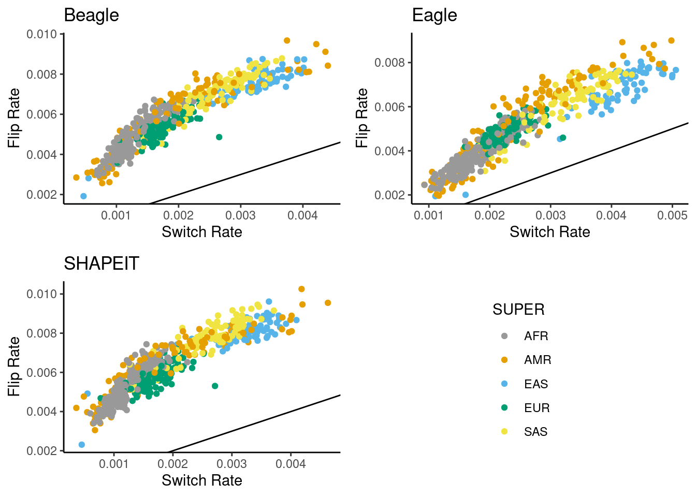
| Version | Author | Date |
|---|---|---|
| 6a3ec67 | Andy Beck | 2024-11-12 |
ggplotify::as.ggplot(switch_v_flip("X"))Warning in get_plot_component(plot, "guide-box"): Multiple components found;
returning the first one. To return all, use `return_all = TRUE`.
| Version | Author | Date |
|---|---|---|
| 6a3ec67 | Andy Beck | 2024-11-12 |
for(c_name in c(as.character(1:22), "X")){
print(c_name)
print(ggplotify::as.ggplot(switch_v_flip(c_name)))
}[1] "1"
[1] "2"
[1] "3"
[1] "4"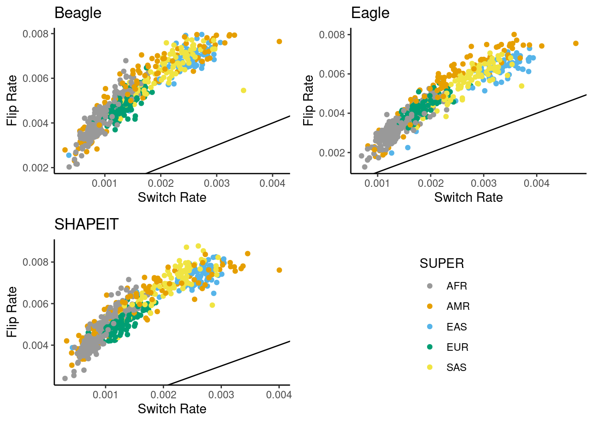
[1] "5"
[1] "6"
[1] "7"
[1] "8"
[1] "9"
[1] "10"
[1] "11"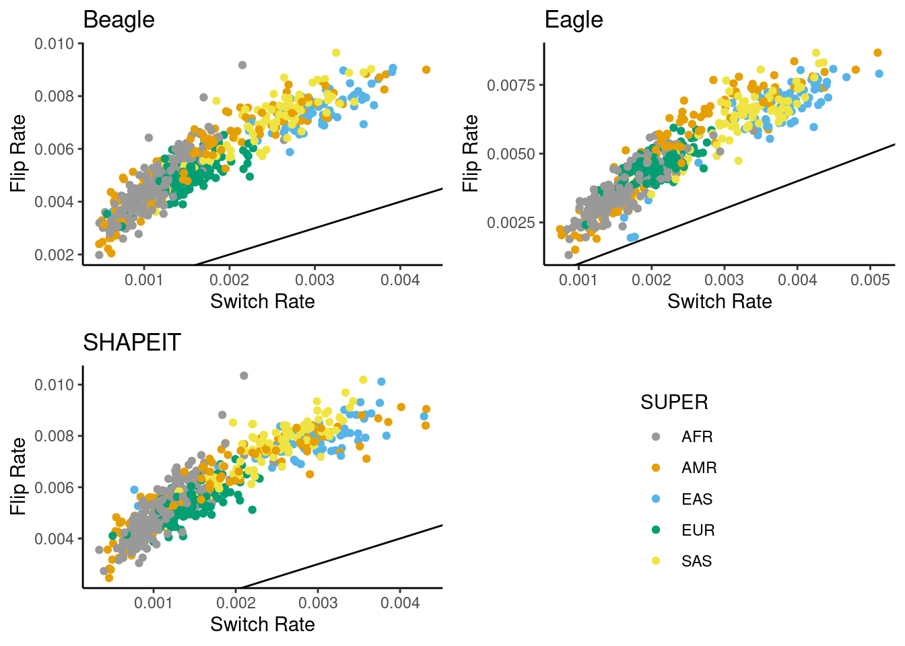
[1] "12"
[1] "13"
[1] "14"
[1] "15"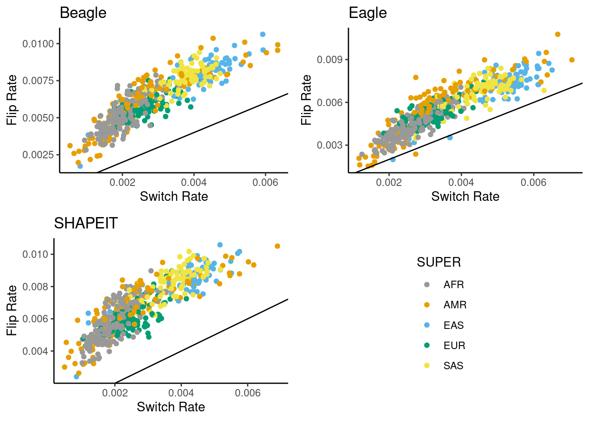
[1] "16"
[1] "17"
[1] "18"
[1] "19"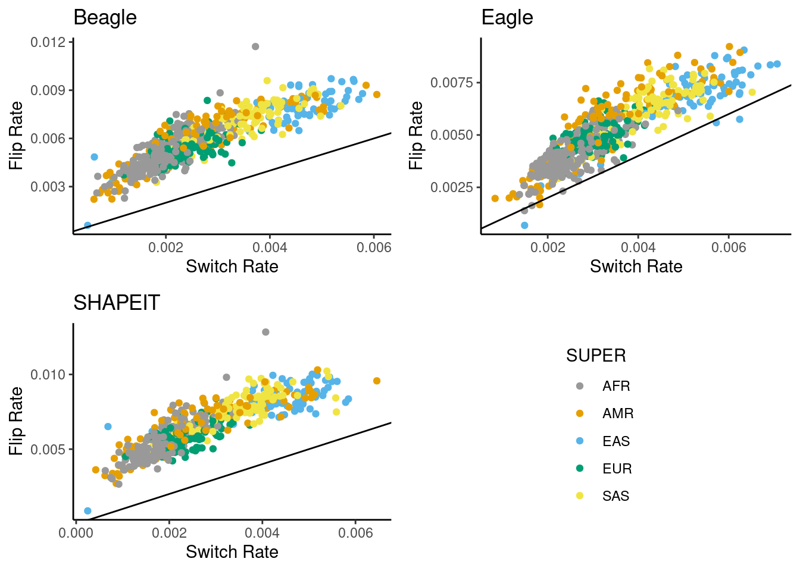
[1] "20"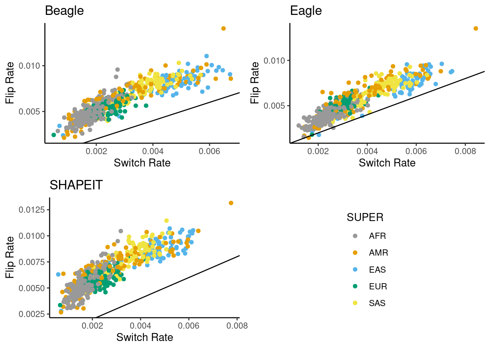
[1] "21"
[1] "22"
[1] "X"
So we see a largely consistent pattern in the comparison of flip rates to switch rates along the autosomes. What’s going on here? First, let’s grab numeric summaries of this phenomenon:
df_all %>%
mutate(Beagle = Beagle_flip / Beagle_switch,
Eagle = Eagle_flip / Eagle_switch,
SHAPEIT = SHAPEIT_flip / SHAPEIT_switch) %>%
group_by(chrom) %>%
summarize(Beagle = mean(Beagle),
Eagle = mean(Eagle),
SHAPEIT = mean(SHAPEIT)) %>%
knitr::kable()| chrom | Beagle | Eagle | SHAPEIT |
|---|---|---|---|
| 1 | 3.2794338 | 2.0639579 | 3.734161 |
| 2 | 3.6025609 | 2.1896054 | 4.069946 |
| 3 | 3.6596805 | 2.2093631 | 4.111300 |
| 4 | 3.8045705 | 2.2695260 | 4.282746 |
| 5 | 3.7257642 | 2.2603942 | 4.206214 |
| 6 | 3.8066200 | 2.3050019 | 4.308977 |
| 7 | 3.1309388 | 2.0122511 | 3.601141 |
| 8 | 3.7076210 | 2.2406910 | 4.152261 |
| 9 | 2.4719417 | 1.7029859 | 2.804578 |
| 10 | 3.1858628 | 2.0047345 | 3.650539 |
| 11 | 3.5774710 | 2.1577079 | 4.037510 |
| 12 | 3.3395775 | 2.0652018 | 3.789400 |
| 13 | 3.2762523 | 2.0203338 | 3.688181 |
| 14 | 2.9383275 | 1.8933496 | 3.286287 |
| 15 | 2.3670342 | 1.6145567 | 2.689333 |
| 16 | 2.6730522 | 1.6902349 | 3.003720 |
| 17 | 2.4834505 | 1.6466443 | 2.833618 |
| 18 | 3.0025809 | 1.8584089 | 3.386343 |
| 19 | 2.3560645 | 1.5725060 | 2.681773 |
| 20 | 2.3846417 | 1.5998664 | 2.741109 |
| 21 | 1.9282866 | 1.4412696 | 2.138180 |
| 22 | 1.8285986 | 1.3588150 | 2.079874 |
| X | 0.9210351 | 0.6475627 | 1.198010 |
We see that for all the autosomes, the average ratio of the flip rate over the switch rate is greater than one for all three methods (this is also the case in chromosome X for SHAPEIT). Let’s get a look at this by population:
df_all %>%
mutate(Beagle = Beagle_flip / Beagle_switch,
Eagle = Eagle_flip / Eagle_switch,
SHAPEIT = SHAPEIT_flip / SHAPEIT_switch) %>%
group_by(chrom, SUPER) %>%
summarize(Beagle = mean(Beagle),
Eagle = mean(Eagle),
SHAPEIT = mean(SHAPEIT)) %>%
knitr::kable()`summarise()` has grouped output by 'chrom'. You can override using the
`.groups` argument.| chrom | SUPER | Beagle | Eagle | SHAPEIT |
|---|---|---|---|---|
| 1 | AFR | 3.7824688 | 2.1717952 | 4.3644628 |
| 1 | AMR | 3.4916019 | 2.1711043 | 4.0861360 |
| 1 | EAS | 2.4117464 | 1.6562030 | 2.6048297 |
| 1 | EUR | 3.0626881 | 2.1389280 | 3.3917956 |
| 1 | SAS | 2.7557657 | 1.8872779 | 3.0639667 |
| 2 | AFR | 4.1790290 | 2.2832837 | 4.7838244 |
| 2 | AMR | 3.7880193 | 2.2896803 | 4.3255109 |
| 2 | EAS | 2.6258673 | 1.7930940 | 2.9013999 |
| 2 | EUR | 3.4138480 | 2.3142115 | 3.7877289 |
| 2 | SAS | 3.0053409 | 1.9857982 | 3.3150093 |
| 3 | AFR | 4.2913746 | 2.2816533 | 4.8888610 |
| 3 | AMR | 3.8008927 | 2.3375035 | 4.3793938 |
| 3 | EAS | 2.7440575 | 1.7966898 | 2.9779412 |
| 3 | EUR | 3.4245311 | 2.3408951 | 3.7334504 |
| 3 | SAS | 3.0099067 | 2.0158690 | 3.2761595 |
| 4 | AFR | 4.4558764 | 2.3950658 | 5.1542871 |
| 4 | AMR | 3.9784547 | 2.3641726 | 4.5351027 |
| 4 | EAS | 2.8732116 | 1.8774906 | 3.0167953 |
| 4 | EUR | 3.5559444 | 2.3349269 | 3.9180198 |
| 4 | SAS | 3.0860553 | 2.0698620 | 3.3465270 |
| 5 | AFR | 4.3640563 | 2.3863960 | 5.0661390 |
| 5 | AMR | 3.9769229 | 2.3988715 | 4.4852292 |
| 5 | EAS | 2.7091361 | 1.8028811 | 2.9442430 |
| 5 | EUR | 3.4577034 | 2.3477303 | 3.7984856 |
| 5 | SAS | 3.0101678 | 2.0168441 | 3.3052607 |
| 6 | AFR | 4.4417547 | 2.4109417 | 5.1102828 |
| 6 | AMR | 3.9864884 | 2.4655610 | 4.6033149 |
| 6 | EAS | 2.9139344 | 1.8461688 | 3.1318904 |
| 6 | EUR | 3.5431052 | 2.4127723 | 3.9477353 |
| 6 | SAS | 3.1026834 | 2.0486963 | 3.3915226 |
| 7 | AFR | 3.4358222 | 2.0386691 | 4.0976550 |
| 7 | AMR | 3.3834600 | 2.1562983 | 3.9061636 |
| 7 | EAS | 2.4783221 | 1.7337275 | 2.6573813 |
| 7 | EUR | 2.9835569 | 2.0834000 | 3.3616283 |
| 7 | SAS | 2.7413072 | 1.8639718 | 3.0363292 |
| 8 | AFR | 4.3639959 | 2.3377285 | 5.0111889 |
| 8 | AMR | 3.8997472 | 2.3773909 | 4.3851459 |
| 8 | EAS | 2.7222402 | 1.8332589 | 2.8861679 |
| 8 | EUR | 3.4308575 | 2.3135305 | 3.7443042 |
| 8 | SAS | 3.0288972 | 2.0443245 | 3.3317938 |
| 9 | AFR | 2.7167881 | 1.7379579 | 3.1797172 |
| 9 | AMR | 2.6313039 | 1.8265266 | 3.0028666 |
| 9 | EAS | 2.0137339 | 1.4369750 | 2.1762378 |
| 9 | EUR | 2.3143126 | 1.7235629 | 2.5308974 |
| 9 | SAS | 2.2226534 | 1.6205926 | 2.4746452 |
| 10 | AFR | 3.6865897 | 2.1091182 | 4.3661121 |
| 10 | AMR | 3.3189099 | 2.1189677 | 3.8355894 |
| 10 | EAS | 2.4957986 | 1.6645161 | 2.6268260 |
| 10 | EUR | 2.9725405 | 2.0523561 | 3.3261450 |
| 10 | SAS | 2.6404108 | 1.8020182 | 2.9356628 |
| 11 | AFR | 4.2127252 | 2.2959461 | 4.8250846 |
| 11 | AMR | 3.7653634 | 2.2655228 | 4.2734444 |
| 11 | EAS | 2.5979657 | 1.7531752 | 2.8535334 |
| 11 | EUR | 3.3168146 | 2.2075144 | 3.6902263 |
| 11 | SAS | 2.9302626 | 1.9370080 | 3.2349231 |
| 12 | AFR | 3.8467732 | 2.1876493 | 4.5065823 |
| 12 | AMR | 3.5998448 | 2.1785835 | 4.0504935 |
| 12 | EAS | 2.5382722 | 1.6846361 | 2.7361386 |
| 12 | EUR | 3.0519552 | 2.0914441 | 3.4113798 |
| 12 | SAS | 2.7615377 | 1.8822319 | 3.0406903 |
| 13 | AFR | 3.7694056 | 2.1743182 | 4.3189474 |
| 13 | AMR | 3.6032171 | 2.1085754 | 4.1318893 |
| 13 | EAS | 2.3157504 | 1.6143600 | 2.5040478 |
| 13 | EUR | 3.0518128 | 2.0558627 | 3.3415248 |
| 13 | SAS | 2.6792306 | 1.8131402 | 2.9208587 |
| 14 | AFR | 3.2960091 | 1.9764364 | 3.7461025 |
| 14 | AMR | 3.2280786 | 1.9975075 | 3.6035366 |
| 14 | EAS | 2.2216294 | 1.5650966 | 2.3824406 |
| 14 | EUR | 2.7099772 | 1.9286444 | 3.0487129 |
| 14 | SAS | 2.5200431 | 1.7626157 | 2.7523052 |
| 15 | AFR | 2.6011132 | 1.6575131 | 3.0109219 |
| 15 | AMR | 2.5517915 | 1.7034705 | 2.9537998 |
| 15 | EAS | 1.9143018 | 1.3794342 | 2.0921267 |
| 15 | EUR | 2.2079934 | 1.6596368 | 2.4528230 |
| 15 | SAS | 2.0994163 | 1.5120841 | 2.3062077 |
| 16 | AFR | 3.0146457 | 1.7731839 | 3.5182951 |
| 16 | AMR | 2.8230149 | 1.7550625 | 3.2022819 |
| 16 | EAS | 2.1384635 | 1.4232076 | 2.2292579 |
| 16 | EUR | 2.4906920 | 1.7083582 | 2.6960514 |
| 16 | SAS | 2.3059671 | 1.5929722 | 2.5101831 |
| 17 | AFR | 2.8332567 | 1.7598674 | 3.2874190 |
| 17 | AMR | 2.6262453 | 1.7030105 | 3.0469014 |
| 17 | EAS | 1.9313468 | 1.3839493 | 2.0623524 |
| 17 | EUR | 2.3005232 | 1.6556059 | 2.5597900 |
| 17 | SAS | 2.1240478 | 1.4992931 | 2.4147568 |
| 18 | AFR | 3.4973949 | 1.9732340 | 4.0401696 |
| 18 | AMR | 3.2733129 | 2.0038807 | 3.7627231 |
| 18 | EAS | 2.2256955 | 1.5078778 | 2.3954829 |
| 18 | EUR | 2.6727665 | 1.8458974 | 2.8714976 |
| 18 | SAS | 2.4693808 | 1.6650847 | 2.7210177 |
| 19 | AFR | 2.6321412 | 1.6012301 | 3.0426278 |
| 19 | AMR | 2.4821556 | 1.6811393 | 2.9189626 |
| 19 | EAS | 1.8665286 | 1.3085841 | 2.0456233 |
| 19 | EUR | 2.2495188 | 1.6212722 | 2.4691987 |
| 19 | SAS | 2.0487832 | 1.4916596 | 2.2526158 |
| 20 | AFR | 2.7139975 | 1.6641333 | 3.1772487 |
| 20 | AMR | 2.4914510 | 1.6401412 | 2.9091050 |
| 20 | EAS | 1.8061320 | 1.3302430 | 2.0387477 |
| 20 | EUR | 2.2632931 | 1.6803142 | 2.5339214 |
| 20 | SAS | 2.0764489 | 1.5100978 | 2.2947516 |
| 21 | AFR | 1.9657417 | 1.4090733 | 2.2235589 |
| 21 | AMR | 2.0524916 | 1.5677560 | 2.2747366 |
| 21 | EAS | 1.7132002 | 1.2893469 | 1.8482763 |
| 21 | EUR | 1.9251872 | 1.4785884 | 2.1171855 |
| 21 | SAS | 1.8256199 | 1.3952475 | 1.9881801 |
| 22 | AFR | 1.9382071 | 1.3513056 | 2.2760728 |
| 22 | AMR | 2.0017385 | 1.4695671 | 2.2781977 |
| 22 | EAS | 1.5190489 | 1.1841196 | 1.6566725 |
| 22 | EUR | 1.7118872 | 1.3687383 | 1.8817758 |
| 22 | SAS | 1.6994718 | 1.3335521 | 1.9041178 |
| X | AFR | 1.1732910 | 0.7486894 | 1.6309066 |
| X | AMR | 1.0739601 | 0.7191317 | 1.4620689 |
| X | EAS | 0.7015263 | 0.5364816 | 0.8092463 |
| X | EUR | 0.8505988 | 0.6159562 | 1.0703887 |
| X | SAS | 0.8057992 | 0.6175544 | 1.0174402 |
df_all %>%
mutate(Beagle = Beagle_flip / Beagle_switch,
Eagle = Eagle_flip / Eagle_switch,
SHAPEIT = SHAPEIT_flip / SHAPEIT_switch) %>%
group_by(chrom, SUPER) %>%
summarize(Beagle = mean(Beagle),
Eagle = mean(Eagle),
SHAPEIT = mean(SHAPEIT)) %>%
pivot_longer(Beagle:SHAPEIT, names_to = "method", values_to = "flip_switch_ratio") %>%
ggplot(aes(x = chrom, y = flip_switch_ratio, color = method)) +
geom_point() +
facet_grid(rows = vars(SUPER)) +
ylab("Flip Rate / Switch Rate") +
xlab("Chromosome") +
scale_colour_manual(values = cbPalette) +
labs(color = "Method") +
theme_linedraw()`summarise()` has grouped output by 'chrom'. You can override using the
`.groups` argument.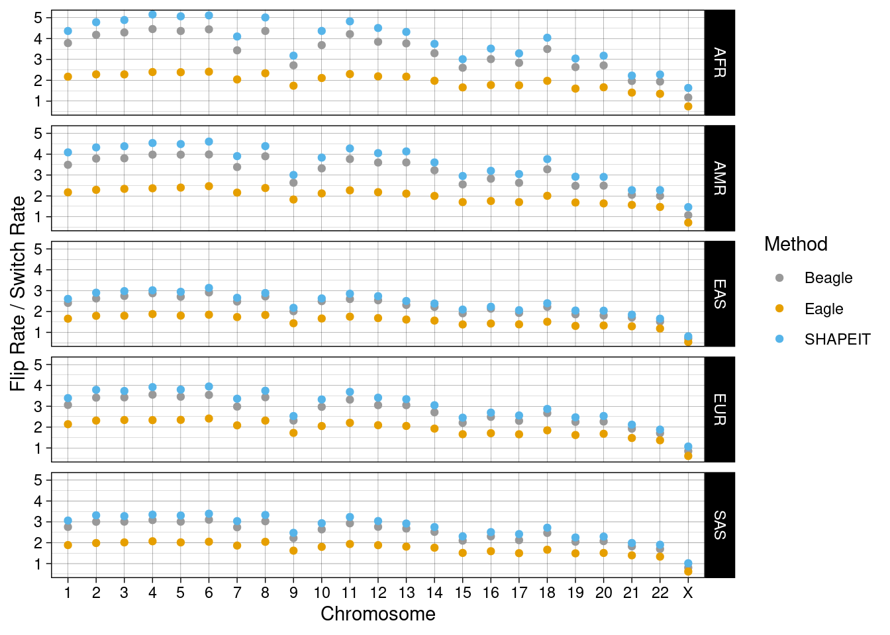
| Version | Author | Date |
|---|---|---|
| 751e6f6 | Andy Beck | 2024-11-12 |
Chromosome Comparisons
Mean number of heterozygous sites
df_all %>%
group_by(chrom, SUPER) %>%
summarize(hets = mean(n_hets),
hets_cpg = mean(n_het_cpg)) %>%
ggplot(aes(x = chrom, y = hets, colour = SUPER)) +
geom_point() +
scale_colour_manual(values = cbPalette) +
xlab("Chromosome") +
ylab("Mean Size (# Het.)") +
labs(color = "Population")`summarise()` has grouped output by 'chrom'. You can override using the
`.groups` argument.
| Version | Author | Date |
|---|---|---|
| 751e6f6 | Andy Beck | 2024-11-12 |
Recombination rates
read_rr <- function(chrom){
df_rr <- read_tsv(paste0("data/decode/chr", chrom, "_recomb.bed"),
show_col_types = F,
col_names = c("chrom", "begin", "end", "rr"))
df_rr
}
plot_rr_window <- function(chrom, bin_size = 1e6){
df_rr <- read_rr(chrom)
df_rr <- df_rr %>%
mutate(bin = ceiling(begin / bin_size),
width = end - begin) %>%
group_by(bin) %>%
summarize(rr= sum(rr * width) / sum(width))
p <- df_rr %>%
ggplot(aes(x = bin, y = rr)) +
geom_point() +
xlab("Bin") +
ylab("Recombination Rate")
return(p)
}MB Scale
for(i in c(1:22, "X")){
print(plot_rr_window(i) + geom_line() + ggtitle(paste0("Chromosome ", i)))
}
| Version | Author | Date |
|---|---|---|
| 751e6f6 | Andy Beck | 2024-11-12 |

| Version | Author | Date |
|---|---|---|
| 751e6f6 | Andy Beck | 2024-11-12 |
| Version | Author | Date |
|---|---|---|
| 751e6f6 | Andy Beck | 2024-11-12 |

| Version | Author | Date |
|---|---|---|
| 751e6f6 | Andy Beck | 2024-11-12 |
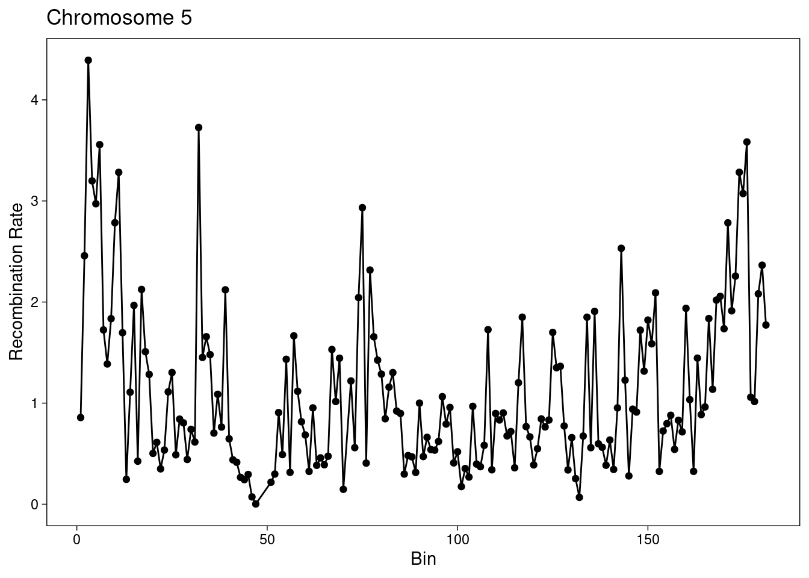
| Version | Author | Date |
|---|---|---|
| 751e6f6 | Andy Beck | 2024-11-12 |

| Version | Author | Date |
|---|---|---|
| 751e6f6 | Andy Beck | 2024-11-12 |

| Version | Author | Date |
|---|---|---|
| 751e6f6 | Andy Beck | 2024-11-12 |
| Version | Author | Date |
|---|---|---|
| 751e6f6 | Andy Beck | 2024-11-12 |

| Version | Author | Date |
|---|---|---|
| 751e6f6 | Andy Beck | 2024-11-12 |
| Version | Author | Date |
|---|---|---|
| 751e6f6 | Andy Beck | 2024-11-12 |

| Version | Author | Date |
|---|---|---|
| 751e6f6 | Andy Beck | 2024-11-12 |

| Version | Author | Date |
|---|---|---|
| 751e6f6 | Andy Beck | 2024-11-12 |
| Version | Author | Date |
|---|---|---|
| 751e6f6 | Andy Beck | 2024-11-12 |

| Version | Author | Date |
|---|---|---|
| 751e6f6 | Andy Beck | 2024-11-12 |
| Version | Author | Date |
|---|---|---|
| 751e6f6 | Andy Beck | 2024-11-12 |
| Version | Author | Date |
|---|---|---|
| 751e6f6 | Andy Beck | 2024-11-12 |

| Version | Author | Date |
|---|---|---|
| 751e6f6 | Andy Beck | 2024-11-12 |
| Version | Author | Date |
|---|---|---|
| 751e6f6 | Andy Beck | 2024-11-12 |
| Version | Author | Date |
|---|---|---|
| 751e6f6 | Andy Beck | 2024-11-12 |

| Version | Author | Date |
|---|---|---|
| 751e6f6 | Andy Beck | 2024-11-12 |
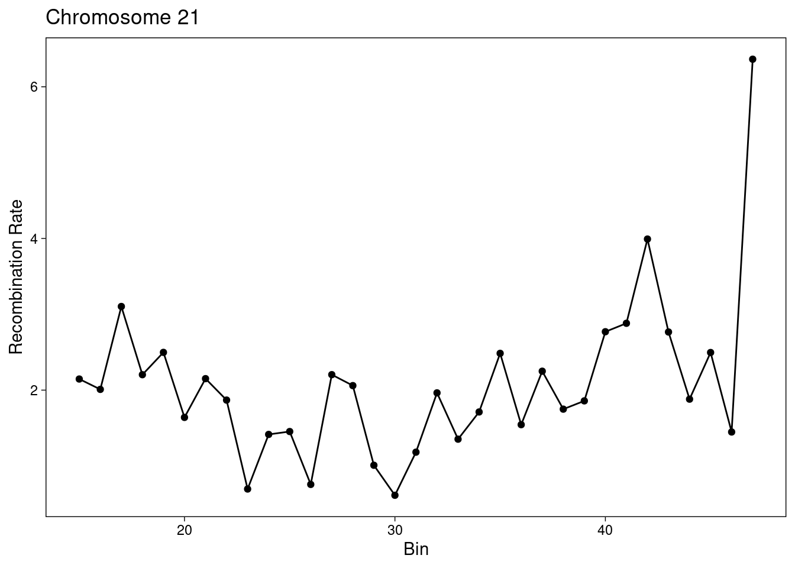
| Version | Author | Date |
|---|---|---|
| 751e6f6 | Andy Beck | 2024-11-12 |

| Version | Author | Date |
|---|---|---|
| 751e6f6 | Andy Beck | 2024-11-12 |

| Version | Author | Date |
|---|---|---|
| 751e6f6 | Andy Beck | 2024-11-12 |
100KB
for(i in c(1:22, "X")){
print(plot_rr_window(i, bin_size = 1e5) + geom_line() + ggtitle(paste0("Chromosome ", i)))
}
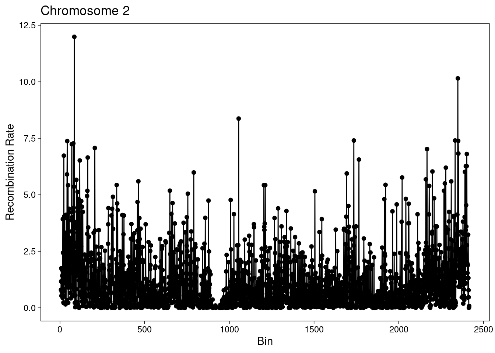
| Version | Author | Date |
|---|---|---|
| e150fe1 | Andy Beck | 2024-11-14 |
| Version | Author | Date |
|---|---|---|
| e150fe1 | Andy Beck | 2024-11-14 |
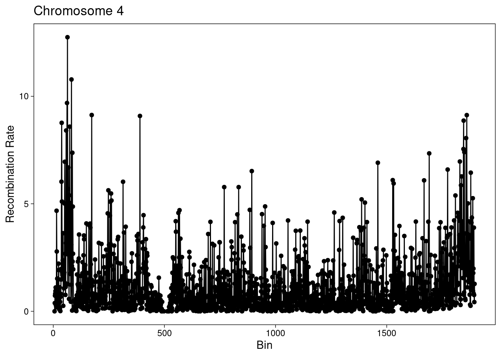
| Version | Author | Date |
|---|---|---|
| e150fe1 | Andy Beck | 2024-11-14 |
| Version | Author | Date |
|---|---|---|
| e150fe1 | Andy Beck | 2024-11-14 |
| Version | Author | Date |
|---|---|---|
| e150fe1 | Andy Beck | 2024-11-14 |
| Version | Author | Date |
|---|---|---|
| e150fe1 | Andy Beck | 2024-11-14 |
| Version | Author | Date |
|---|---|---|
| e150fe1 | Andy Beck | 2024-11-14 |
| Version | Author | Date |
|---|---|---|
| e150fe1 | Andy Beck | 2024-11-14 |
| Version | Author | Date |
|---|---|---|
| e150fe1 | Andy Beck | 2024-11-14 |
| Version | Author | Date |
|---|---|---|
| e150fe1 | Andy Beck | 2024-11-14 |
| Version | Author | Date |
|---|---|---|
| e150fe1 | Andy Beck | 2024-11-14 |
| Version | Author | Date |
|---|---|---|
| e150fe1 | Andy Beck | 2024-11-14 |
| Version | Author | Date |
|---|---|---|
| e150fe1 | Andy Beck | 2024-11-14 |
| Version | Author | Date |
|---|---|---|
| e150fe1 | Andy Beck | 2024-11-14 |
| Version | Author | Date |
|---|---|---|
| e150fe1 | Andy Beck | 2024-11-14 |
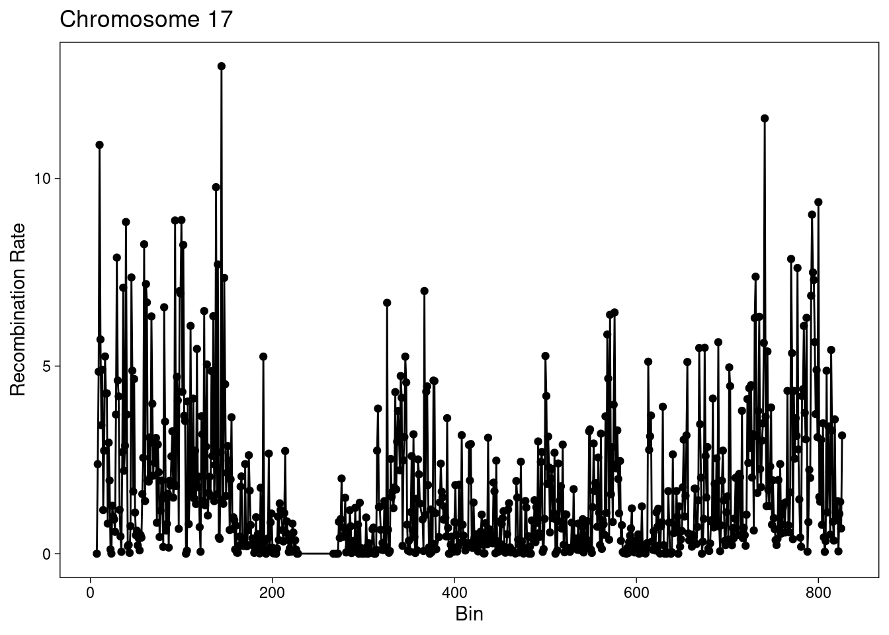
| Version | Author | Date |
|---|---|---|
| e150fe1 | Andy Beck | 2024-11-14 |
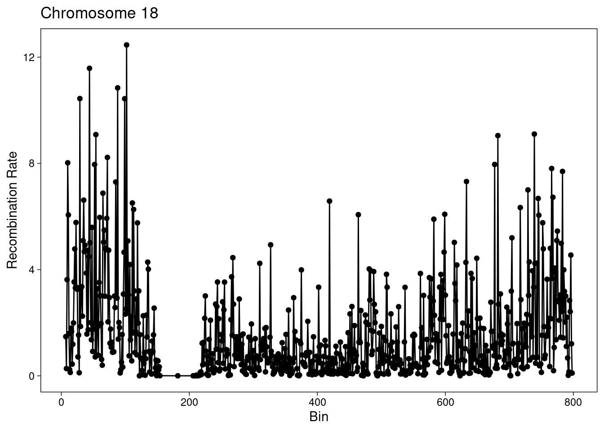
| Version | Author | Date |
|---|---|---|
| e150fe1 | Andy Beck | 2024-11-14 |
| Version | Author | Date |
|---|---|---|
| e150fe1 | Andy Beck | 2024-11-14 |
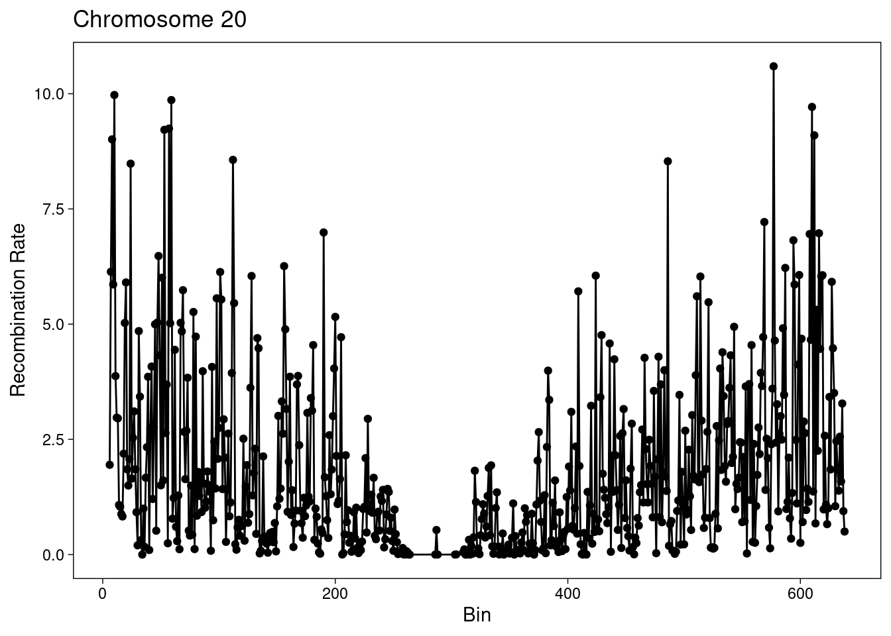
| Version | Author | Date |
|---|---|---|
| e150fe1 | Andy Beck | 2024-11-14 |
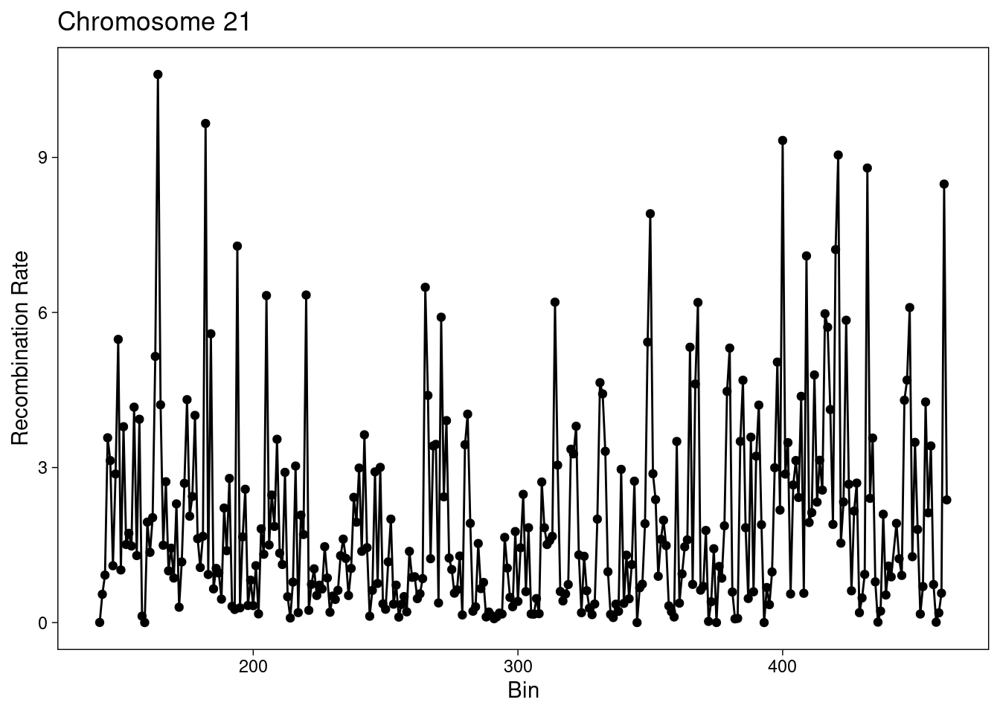
| Version | Author | Date |
|---|---|---|
| e150fe1 | Andy Beck | 2024-11-14 |

| Version | Author | Date |
|---|---|---|
| e150fe1 | Andy Beck | 2024-11-14 |
| Version | Author | Date |
|---|---|---|
| e150fe1 | Andy Beck | 2024-11-14 |
10kb
100KB
for(i in c(1:22, "X")){
print(plot_rr_window(i, bin_size = 1e4) + geom_line() + ggtitle(paste0("Chromosome ", i)))
}
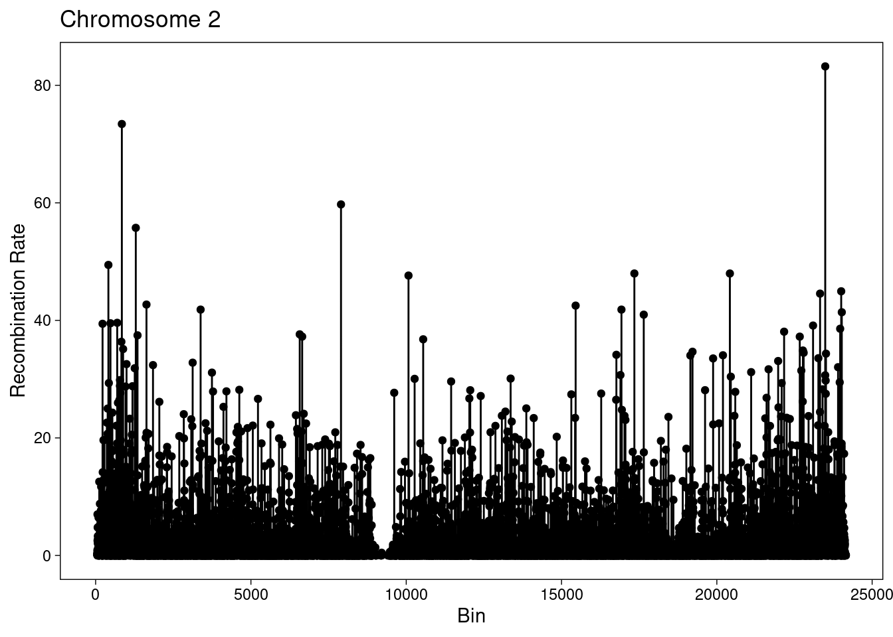
| Version | Author | Date |
|---|---|---|
| e150fe1 | Andy Beck | 2024-11-14 |
| Version | Author | Date |
|---|---|---|
| e150fe1 | Andy Beck | 2024-11-14 |
| Version | Author | Date |
|---|---|---|
| e150fe1 | Andy Beck | 2024-11-14 |
| Version | Author | Date |
|---|---|---|
| e150fe1 | Andy Beck | 2024-11-14 |
| Version | Author | Date |
|---|---|---|
| e150fe1 | Andy Beck | 2024-11-14 |
| Version | Author | Date |
|---|---|---|
| e150fe1 | Andy Beck | 2024-11-14 |
| Version | Author | Date |
|---|---|---|
| e150fe1 | Andy Beck | 2024-11-14 |
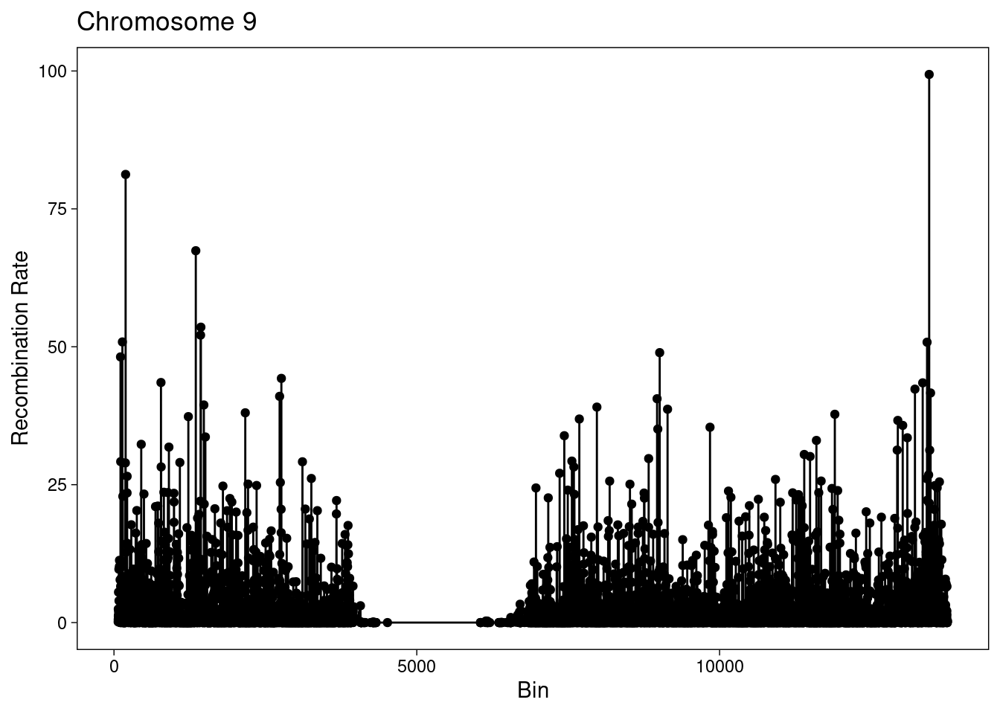
| Version | Author | Date |
|---|---|---|
| e150fe1 | Andy Beck | 2024-11-14 |
| Version | Author | Date |
|---|---|---|
| e150fe1 | Andy Beck | 2024-11-14 |

| Version | Author | Date |
|---|---|---|
| e150fe1 | Andy Beck | 2024-11-14 |
| Version | Author | Date |
|---|---|---|
| e150fe1 | Andy Beck | 2024-11-14 |
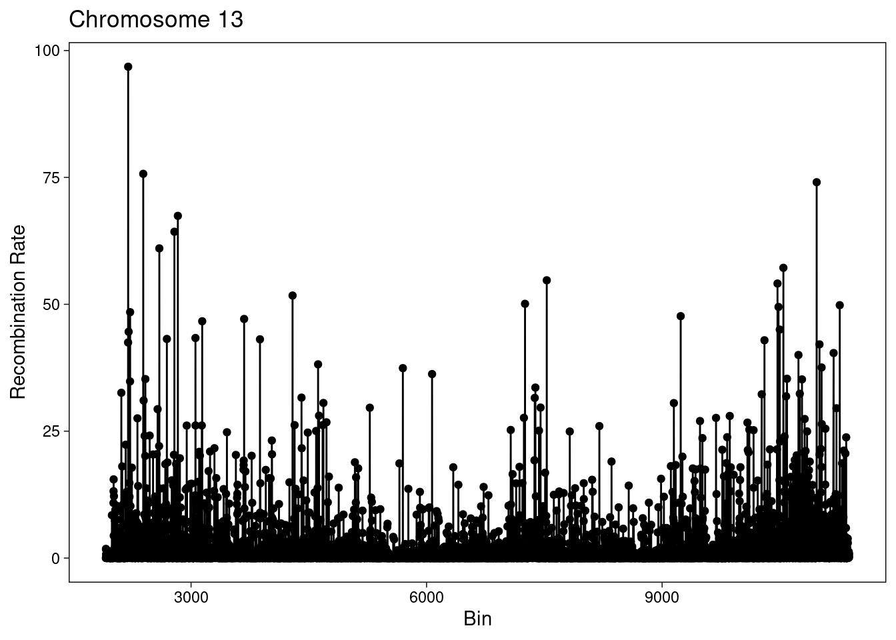
| Version | Author | Date |
|---|---|---|
| e150fe1 | Andy Beck | 2024-11-14 |
| Version | Author | Date |
|---|---|---|
| e150fe1 | Andy Beck | 2024-11-14 |
| Version | Author | Date |
|---|---|---|
| e150fe1 | Andy Beck | 2024-11-14 |
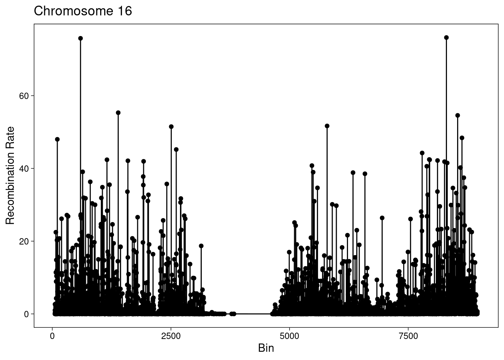
| Version | Author | Date |
|---|---|---|
| e150fe1 | Andy Beck | 2024-11-14 |
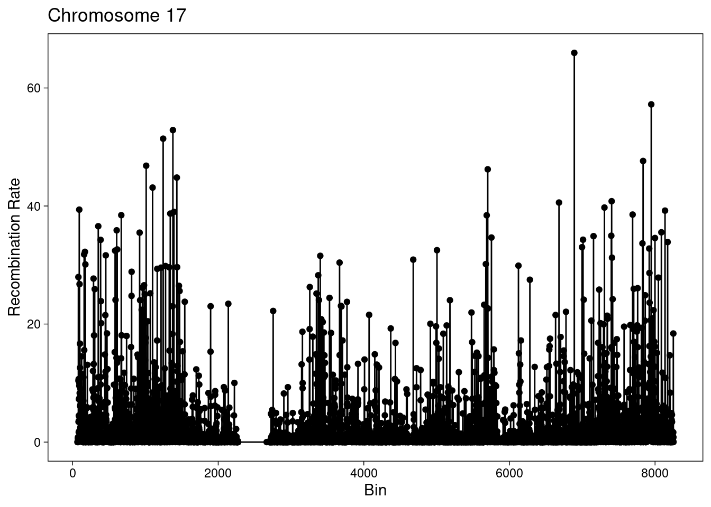
| Version | Author | Date |
|---|---|---|
| e150fe1 | Andy Beck | 2024-11-14 |
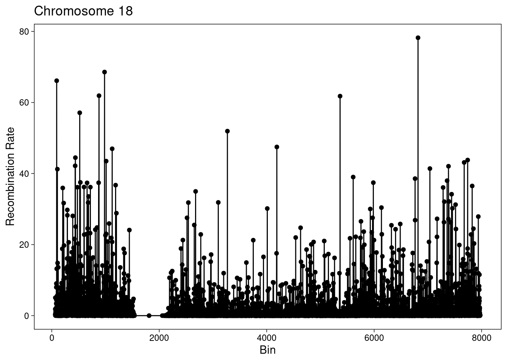
| Version | Author | Date |
|---|---|---|
| e150fe1 | Andy Beck | 2024-11-14 |
| Version | Author | Date |
|---|---|---|
| e150fe1 | Andy Beck | 2024-11-14 |
| Version | Author | Date |
|---|---|---|
| e150fe1 | Andy Beck | 2024-11-14 |
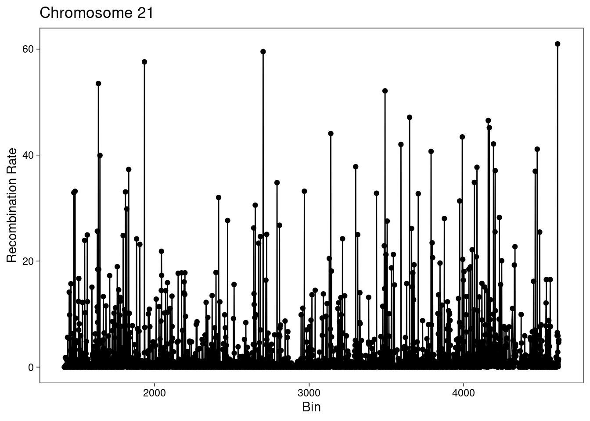
| Version | Author | Date |
|---|---|---|
| e150fe1 | Andy Beck | 2024-11-14 |
| Version | Author | Date |
|---|---|---|
| e150fe1 | Andy Beck | 2024-11-14 |
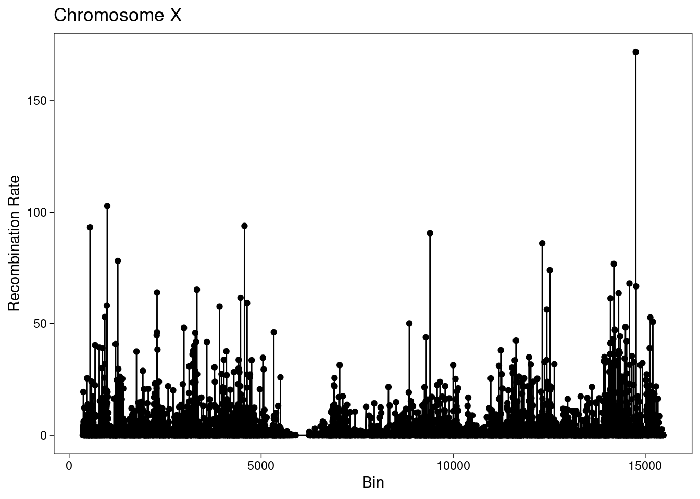
| Version | Author | Date |
|---|---|---|
| e150fe1 | Andy Beck | 2024-11-14 |
Switch Error Rates
Considering only switch errors, what do the rates we observe in the autosomes look like compared to what we observe in X?
df_all %>%
group_by(SUPER, chrom) %>%
summarize(Beagle = mean(Beagle_switch),
Eagle = mean(Eagle_switch),
SHAPEIT = mean(SHAPEIT_switch)) %>%
pivot_longer(Beagle:SHAPEIT, names_to = "Method", values_to = "switch") %>%
ggplot(aes(x = chrom, y = switch, color = Method)) +
geom_point() +
theme_linedraw_blank() +
scale_colour_manual(values = cbPalette) +
ylab("Mean Switch Rate") +
facet_grid(rows = vars(SUPER)) +
xlab("Chromosome")`summarise()` has grouped output by 'SUPER'. You can override using the
`.groups` argument.
| Version | Author | Date |
|---|---|---|
| e150fe1 | Andy Beck | 2024-11-14 |
df_all %>%
group_by(chrom, SUPER) %>%
summarize(Beagle = mean(Beagle_switch),
Eagle = mean(Eagle_switch),
SHAPEIT = mean(SHAPEIT_switch)) %>%
knitr::kable()`summarise()` has grouped output by 'chrom'. You can override using the
`.groups` argument.| chrom | SUPER | Beagle | Eagle | SHAPEIT |
|---|---|---|---|---|
| 1 | AFR | 0.0013052 | 0.0017903 | 0.0012387 |
| 1 | AMR | 0.0017872 | 0.0023371 | 0.0017691 |
| 1 | EAS | 0.0032002 | 0.0041118 | 0.0032335 |
| 1 | EUR | 0.0017886 | 0.0023189 | 0.0017314 |
| 1 | SAS | 0.0026080 | 0.0033236 | 0.0025905 |
| 2 | AFR | 0.0012053 | 0.0017189 | 0.0011586 |
| 2 | AMR | 0.0017353 | 0.0023140 | 0.0017329 |
| 2 | EAS | 0.0030274 | 0.0038936 | 0.0030471 |
| 2 | EUR | 0.0015945 | 0.0021123 | 0.0015527 |
| 2 | SAS | 0.0024478 | 0.0031917 | 0.0024384 |
| 3 | AFR | 0.0011132 | 0.0016064 | 0.0010797 |
| 3 | AMR | 0.0015903 | 0.0021126 | 0.0015913 |
| 3 | EAS | 0.0027775 | 0.0036586 | 0.0028368 |
| 3 | EUR | 0.0015426 | 0.0020467 | 0.0015221 |
| 3 | SAS | 0.0022913 | 0.0029564 | 0.0023166 |
| 4 | AFR | 0.0009980 | 0.0014317 | 0.0009464 |
| 4 | AMR | 0.0015053 | 0.0020283 | 0.0015142 |
| 4 | EAS | 0.0024285 | 0.0032698 | 0.0025261 |
| 4 | EUR | 0.0013823 | 0.0018948 | 0.0013496 |
| 4 | SAS | 0.0021158 | 0.0027452 | 0.0021195 |
| 5 | AFR | 0.0011014 | 0.0015655 | 0.0010470 |
| 5 | AMR | 0.0015611 | 0.0020641 | 0.0016039 |
| 5 | EAS | 0.0028038 | 0.0036330 | 0.0028400 |
| 5 | EUR | 0.0015083 | 0.0020053 | 0.0014802 |
| 5 | SAS | 0.0023514 | 0.0030164 | 0.0023551 |
| 6 | AFR | 0.0010042 | 0.0014350 | 0.0009644 |
| 6 | AMR | 0.0014014 | 0.0018479 | 0.0014014 |
| 6 | EAS | 0.0024046 | 0.0031840 | 0.0024345 |
| 6 | EUR | 0.0013156 | 0.0017292 | 0.0012693 |
| 6 | SAS | 0.0020711 | 0.0026808 | 0.0020689 |
| 7 | AFR | 0.0013927 | 0.0018832 | 0.0013034 |
| 7 | AMR | 0.0017820 | 0.0022922 | 0.0017779 |
| 7 | EAS | 0.0030462 | 0.0038256 | 0.0030664 |
| 7 | EUR | 0.0017095 | 0.0022203 | 0.0016417 |
| 7 | SAS | 0.0025264 | 0.0032337 | 0.0025053 |
| 8 | AFR | 0.0010969 | 0.0015792 | 0.0010587 |
| 8 | AMR | 0.0016436 | 0.0021846 | 0.0016925 |
| 8 | EAS | 0.0028793 | 0.0037135 | 0.0028934 |
| 8 | EUR | 0.0015291 | 0.0020511 | 0.0015053 |
| 8 | SAS | 0.0022846 | 0.0029473 | 0.0022809 |
| 9 | AFR | 0.0019769 | 0.0024823 | 0.0018632 |
| 9 | AMR | 0.0023680 | 0.0029168 | 0.0023577 |
| 9 | EAS | 0.0040012 | 0.0050003 | 0.0040075 |
| 9 | EUR | 0.0024910 | 0.0030236 | 0.0024173 |
| 9 | SAS | 0.0033547 | 0.0040402 | 0.0033001 |
| 10 | AFR | 0.0013098 | 0.0018060 | 0.0012265 |
| 10 | AMR | 0.0017679 | 0.0023076 | 0.0017460 |
| 10 | EAS | 0.0029733 | 0.0038280 | 0.0030104 |
| 10 | EUR | 0.0017084 | 0.0022221 | 0.0016298 |
| 10 | SAS | 0.0025730 | 0.0033107 | 0.0025556 |
| 11 | AFR | 0.0011342 | 0.0016142 | 0.0010911 |
| 11 | AMR | 0.0016686 | 0.0022208 | 0.0016766 |
| 11 | EAS | 0.0028760 | 0.0037059 | 0.0028851 |
| 11 | EUR | 0.0015634 | 0.0021051 | 0.0015097 |
| 11 | SAS | 0.0024352 | 0.0031876 | 0.0024180 |
| 12 | AFR | 0.0012366 | 0.0016963 | 0.0011725 |
| 12 | AMR | 0.0017133 | 0.0022668 | 0.0017451 |
| 12 | EAS | 0.0030319 | 0.0038876 | 0.0030997 |
| 12 | EUR | 0.0016871 | 0.0022086 | 0.0016389 |
| 12 | SAS | 0.0026880 | 0.0033052 | 0.0027462 |
| 13 | AFR | 0.0012403 | 0.0016660 | 0.0011911 |
| 13 | AMR | 0.0016375 | 0.0022049 | 0.0016755 |
| 13 | EAS | 0.0030531 | 0.0038974 | 0.0030415 |
| 13 | EUR | 0.0016496 | 0.0021834 | 0.0016161 |
| 13 | SAS | 0.0024669 | 0.0032397 | 0.0025033 |
| 14 | AFR | 0.0015195 | 0.0020110 | 0.0014691 |
| 14 | AMR | 0.0020364 | 0.0026790 | 0.0020786 |
| 14 | EAS | 0.0033312 | 0.0042865 | 0.0033948 |
| 14 | EUR | 0.0019598 | 0.0025132 | 0.0019172 |
| 14 | SAS | 0.0028376 | 0.0035652 | 0.0028560 |
| 15 | AFR | 0.0020650 | 0.0026394 | 0.0019616 |
| 15 | AMR | 0.0025035 | 0.0031348 | 0.0025224 |
| 15 | EAS | 0.0042406 | 0.0051927 | 0.0042618 |
| 15 | EUR | 0.0026687 | 0.0032246 | 0.0025832 |
| 15 | SAS | 0.0035868 | 0.0044482 | 0.0036467 |
| 16 | AFR | 0.0018542 | 0.0025189 | 0.0017446 |
| 16 | AMR | 0.0025074 | 0.0032079 | 0.0025376 |
| 16 | EAS | 0.0041978 | 0.0052769 | 0.0042882 |
| 16 | EUR | 0.0023776 | 0.0031552 | 0.0024225 |
| 16 | SAS | 0.0035045 | 0.0042450 | 0.0035080 |
| 17 | AFR | 0.0019475 | 0.0025914 | 0.0018755 |
| 17 | AMR | 0.0025995 | 0.0032958 | 0.0025637 |
| 17 | EAS | 0.0045645 | 0.0055510 | 0.0046138 |
| 17 | EUR | 0.0025944 | 0.0032652 | 0.0025162 |
| 17 | SAS | 0.0037612 | 0.0046904 | 0.0036410 |
| 18 | AFR | 0.0013772 | 0.0018814 | 0.0013329 |
| 18 | AMR | 0.0019535 | 0.0025169 | 0.0019519 |
| 18 | EAS | 0.0034969 | 0.0044094 | 0.0035424 |
| 18 | EUR | 0.0019497 | 0.0025495 | 0.0019403 |
| 18 | SAS | 0.0028421 | 0.0035757 | 0.0028211 |
| 19 | AFR | 0.0019848 | 0.0026161 | 0.0018712 |
| 19 | AMR | 0.0025499 | 0.0031976 | 0.0024752 |
| 19 | EAS | 0.0043969 | 0.0053186 | 0.0044052 |
| 19 | EUR | 0.0025062 | 0.0031253 | 0.0024257 |
| 19 | SAS | 0.0035449 | 0.0042728 | 0.0035417 |
| 20 | AFR | 0.0019218 | 0.0025123 | 0.0017963 |
| 20 | AMR | 0.0026977 | 0.0033856 | 0.0026562 |
| 20 | EAS | 0.0046970 | 0.0055897 | 0.0046710 |
| 20 | EUR | 0.0025147 | 0.0030902 | 0.0024118 |
| 20 | SAS | 0.0036590 | 0.0044293 | 0.0035998 |
| 21 | AFR | 0.0027955 | 0.0032919 | 0.0027181 |
| 21 | AMR | 0.0030160 | 0.0035515 | 0.0030759 |
| 21 | EAS | 0.0044925 | 0.0053124 | 0.0044771 |
| 21 | EUR | 0.0029814 | 0.0035576 | 0.0029377 |
| 21 | SAS | 0.0039509 | 0.0046471 | 0.0039802 |
| 22 | AFR | 0.0031076 | 0.0037806 | 0.0028980 |
| 22 | AMR | 0.0035139 | 0.0042036 | 0.0034375 |
| 22 | EAS | 0.0056433 | 0.0065968 | 0.0054999 |
| 22 | EUR | 0.0036091 | 0.0042027 | 0.0035482 |
| 22 | SAS | 0.0047856 | 0.0055393 | 0.0046784 |
| X | AFR | 0.0008880 | 0.0013558 | 0.0007707 |
| X | AMR | 0.0012206 | 0.0016760 | 0.0011439 |
| X | EAS | 0.0028352 | 0.0036614 | 0.0026536 |
| X | EUR | 0.0015108 | 0.0020636 | 0.0013951 |
| X | SAS | 0.0020451 | 0.0026914 | 0.0018639 |
Flip Error Rates
What do the flip error rates look like in the autosomes (compared to X)?
df_all %>%
group_by(SUPER, chrom) %>%
summarize(Beagle = mean(Beagle_flip),
Eagle = mean(Eagle_flip),
SHAPEIT = mean(SHAPEIT_flip)) %>%
pivot_longer(Beagle:SHAPEIT, names_to = "Method", values_to = "flip") %>%
ggplot(aes(x = chrom, y = flip, color = Method)) +
geom_point() +
scale_colour_manual(values = cbPalette) +
ylab("Mean Flip Rate") +
facet_grid(rows = vars(SUPER)) +
xlab("Chromosome")`summarise()` has grouped output by 'SUPER'. You can override using the
`.groups` argument.
| Version | Author | Date |
|---|---|---|
| e150fe1 | Andy Beck | 2024-11-14 |
df_all %>%
group_by(chrom, SUPER) %>%
summarize(Beagle = mean(Beagle_flip),
Eagle = mean(Eagle_flip),
SHAPEIT = mean(SHAPEIT_flip)) %>%
knitr::kable()`summarise()` has grouped output by 'chrom'. You can override using the
`.groups` argument.| chrom | SUPER | Beagle | Eagle | SHAPEIT |
|---|---|---|---|---|
| 1 | AFR | 0.0048510 | 0.0038607 | 0.0052944 |
| 1 | AMR | 0.0055828 | 0.0049954 | 0.0061470 |
| 1 | EAS | 0.0074943 | 0.0068074 | 0.0080115 |
| 1 | EUR | 0.0054117 | 0.0049288 | 0.0057730 |
| 1 | SAS | 0.0070491 | 0.0062546 | 0.0077186 |
| 2 | AFR | 0.0049356 | 0.0039058 | 0.0054039 |
| 2 | AMR | 0.0058569 | 0.0051912 | 0.0063823 |
| 2 | EAS | 0.0076922 | 0.0070002 | 0.0083523 |
| 2 | EUR | 0.0053915 | 0.0048466 | 0.0058081 |
| 2 | SAS | 0.0072199 | 0.0063252 | 0.0078777 |
| 3 | AFR | 0.0046336 | 0.0036386 | 0.0050852 |
| 3 | AMR | 0.0054303 | 0.0048384 | 0.0059501 |
| 3 | EAS | 0.0072601 | 0.0065981 | 0.0077702 |
| 3 | EUR | 0.0052122 | 0.0047396 | 0.0055768 |
| 3 | SAS | 0.0067327 | 0.0059511 | 0.0073641 |
| 4 | AFR | 0.0043179 | 0.0034037 | 0.0047117 |
| 4 | AMR | 0.0052433 | 0.0047134 | 0.0057537 |
| 4 | EAS | 0.0066767 | 0.0061394 | 0.0072441 |
| 4 | EUR | 0.0048553 | 0.0043933 | 0.0052107 |
| 4 | SAS | 0.0064016 | 0.0056558 | 0.0069289 |
| 5 | AFR | 0.0046907 | 0.0036968 | 0.0051277 |
| 5 | AMR | 0.0053647 | 0.0048383 | 0.0059255 |
| 5 | EAS | 0.0071986 | 0.0065384 | 0.0078240 |
| 5 | EUR | 0.0051650 | 0.0046728 | 0.0055210 |
| 5 | SAS | 0.0068679 | 0.0060593 | 0.0074860 |
| 6 | AFR | 0.0042879 | 0.0034016 | 0.0046848 |
| 6 | AMR | 0.0049184 | 0.0044420 | 0.0053747 |
| 6 | EAS | 0.0065134 | 0.0059036 | 0.0069773 |
| 6 | EUR | 0.0045903 | 0.0041417 | 0.0048986 |
| 6 | SAS | 0.0061483 | 0.0054287 | 0.0066828 |
| 7 | AFR | 0.0047125 | 0.0038188 | 0.0052157 |
| 7 | AMR | 0.0054487 | 0.0048671 | 0.0059391 |
| 7 | EAS | 0.0072971 | 0.0066100 | 0.0078104 |
| 7 | EUR | 0.0050546 | 0.0046023 | 0.0054387 |
| 7 | SAS | 0.0068067 | 0.0060234 | 0.0074503 |
| 8 | AFR | 0.0046628 | 0.0036525 | 0.0051578 |
| 8 | AMR | 0.0055686 | 0.0050487 | 0.0061626 |
| 8 | EAS | 0.0074902 | 0.0067917 | 0.0079266 |
| 8 | EUR | 0.0051737 | 0.0046984 | 0.0055363 |
| 8 | SAS | 0.0067853 | 0.0060173 | 0.0074358 |
| 9 | AFR | 0.0053080 | 0.0042987 | 0.0058224 |
| 9 | AMR | 0.0058839 | 0.0052890 | 0.0064635 |
| 9 | EAS | 0.0079480 | 0.0072105 | 0.0084826 |
| 9 | EUR | 0.0057033 | 0.0051776 | 0.0060413 |
| 9 | SAS | 0.0073626 | 0.0065281 | 0.0080308 |
| 10 | AFR | 0.0047048 | 0.0037687 | 0.0051588 |
| 10 | AMR | 0.0053362 | 0.0047941 | 0.0058427 |
| 10 | EAS | 0.0069914 | 0.0063792 | 0.0075466 |
| 10 | EUR | 0.0050001 | 0.0045182 | 0.0053390 |
| 10 | SAS | 0.0066377 | 0.0059389 | 0.0072603 |
| 11 | AFR | 0.0046182 | 0.0036594 | 0.0050623 |
| 11 | AMR | 0.0055063 | 0.0049217 | 0.0059881 |
| 11 | EAS | 0.0071876 | 0.0065084 | 0.0077530 |
| 11 | EUR | 0.0050552 | 0.0045971 | 0.0054001 |
| 11 | SAS | 0.0069391 | 0.0061410 | 0.0075150 |
| 12 | AFR | 0.0046534 | 0.0036729 | 0.0051003 |
| 12 | AMR | 0.0054162 | 0.0048635 | 0.0059322 |
| 12 | EAS | 0.0071734 | 0.0065288 | 0.0077277 |
| 12 | EUR | 0.0050806 | 0.0045861 | 0.0054734 |
| 12 | SAS | 0.0069258 | 0.0060556 | 0.0076234 |
| 13 | AFR | 0.0045224 | 0.0035729 | 0.0049647 |
| 13 | AMR | 0.0051377 | 0.0045221 | 0.0056554 |
| 13 | EAS | 0.0068750 | 0.0062734 | 0.0073887 |
| 13 | EUR | 0.0049592 | 0.0044487 | 0.0052887 |
| 13 | SAS | 0.0064169 | 0.0058463 | 0.0071056 |
| 14 | AFR | 0.0048614 | 0.0039248 | 0.0053368 |
| 14 | AMR | 0.0058034 | 0.0051850 | 0.0063354 |
| 14 | EAS | 0.0072086 | 0.0066775 | 0.0078173 |
| 14 | EUR | 0.0052081 | 0.0047904 | 0.0056561 |
| 14 | SAS | 0.0069844 | 0.0062173 | 0.0076443 |
| 15 | AFR | 0.0052720 | 0.0043390 | 0.0057696 |
| 15 | AMR | 0.0058981 | 0.0052903 | 0.0064865 |
| 15 | EAS | 0.0078682 | 0.0071807 | 0.0084879 |
| 15 | EUR | 0.0057786 | 0.0052838 | 0.0061798 |
| 15 | SAS | 0.0073974 | 0.0066800 | 0.0081688 |
| 16 | AFR | 0.0054591 | 0.0044255 | 0.0059674 |
| 16 | AMR | 0.0062848 | 0.0055286 | 0.0068820 |
| 16 | EAS | 0.0083864 | 0.0075085 | 0.0089122 |
| 16 | EUR | 0.0058225 | 0.0053357 | 0.0063847 |
| 16 | SAS | 0.0079027 | 0.0067609 | 0.0084979 |
| 17 | AFR | 0.0053959 | 0.0044922 | 0.0059664 |
| 17 | AMR | 0.0061924 | 0.0055370 | 0.0067500 |
| 17 | EAS | 0.0084276 | 0.0076491 | 0.0089137 |
| 17 | EUR | 0.0058935 | 0.0053590 | 0.0063128 |
| 17 | SAS | 0.0077770 | 0.0069922 | 0.0085052 |
| 18 | AFR | 0.0045758 | 0.0036447 | 0.0050769 |
| 18 | AMR | 0.0055085 | 0.0048933 | 0.0060668 |
| 18 | EAS | 0.0072547 | 0.0065975 | 0.0077360 |
| 18 | EUR | 0.0051054 | 0.0046442 | 0.0054571 |
| 18 | SAS | 0.0067432 | 0.0059355 | 0.0073670 |
| 19 | AFR | 0.0050914 | 0.0041414 | 0.0055111 |
| 19 | AMR | 0.0058475 | 0.0052829 | 0.0063397 |
| 19 | EAS | 0.0077347 | 0.0069672 | 0.0082387 |
| 19 | EUR | 0.0055368 | 0.0050114 | 0.0058590 |
| 19 | SAS | 0.0071207 | 0.0063008 | 0.0077264 |
| 20 | AFR | 0.0050894 | 0.0041390 | 0.0055169 |
| 20 | AMR | 0.0060920 | 0.0054616 | 0.0066460 |
| 20 | EAS | 0.0080385 | 0.0074369 | 0.0086407 |
| 20 | EUR | 0.0055473 | 0.0051463 | 0.0059503 |
| 20 | SAS | 0.0074491 | 0.0066527 | 0.0080441 |
| 21 | AFR | 0.0053833 | 0.0045896 | 0.0059091 |
| 21 | AMR | 0.0059042 | 0.0054904 | 0.0064469 |
| 21 | EAS | 0.0073861 | 0.0067777 | 0.0078764 |
| 21 | EUR | 0.0055926 | 0.0051593 | 0.0060383 |
| 21 | SAS | 0.0070771 | 0.0064658 | 0.0077261 |
| 22 | AFR | 0.0059119 | 0.0050633 | 0.0064403 |
| 22 | AMR | 0.0065345 | 0.0060247 | 0.0070765 |
| 22 | EAS | 0.0082993 | 0.0077586 | 0.0088416 |
| 22 | EUR | 0.0060574 | 0.0056671 | 0.0064710 |
| 22 | SAS | 0.0079138 | 0.0072920 | 0.0086551 |
| X | AFR | 0.0010081 | 0.0009991 | 0.0011945 |
| X | AMR | 0.0011009 | 0.0010802 | 0.0012704 |
| X | EAS | 0.0019555 | 0.0019427 | 0.0021114 |
| X | EUR | 0.0012423 | 0.0012304 | 0.0014230 |
| X | SAS | 0.0015903 | 0.0016220 | 0.0017988 |
Error distributions across bins
Data Loading Functions
single_bin_counts <- function(id, het_loc, bin_size = 1e6){
df_het <- load_het_pos(id, het_loc)
df_het$bin <- ceiling(df_het$pos / bin_size)
final <- df_het %>%
group_by(bin) %>%
summarize(s_b = sum(beagle_switch),
s_e = sum(eagle_switch),
s_s = sum(shapeit_switch),
f_b = sum(beagle_flip),
f_e = sum(eagle_flip),
f_s = sum(shapeit_flip),
n_het = n(),
n_het_cpg = sum(cpg),
cpg_s_b = sum(cpg * beagle_switch),
cpg_s_e = sum(cpg * eagle_switch),
cpg_s_s = sum(cpg * shapeit_switch),
cpg_f_b = sum(cpg * beagle_flip),
cpg_f_e = sum(cpg * eagle_flip),
cpg_f_s = sum(cpg * shapeit_flip))
final$id <- id
return(final)
}
all_counts <- function(ids, het_loc, df_subj_rel, bin_size = 1e6){
final <- vector(mode = "list", length = length(ids))
for(i in 1:length(ids)){
final[[i]] <- single_bin_counts(ids[i], het_loc)
}
return(bind_rows(final) %>% left_join({df_subj_rel %>% select(id, SUPER)}, by = "id"))
}Plotting Functions
plot_switch_rate_bin <- function(df, chrom, bin_label="MB"){
p <- df %>%
filter(chrom == chrom) %>%
mutate(Beagle = s_b / n_het,
Eagle = s_e / n_het,
SHAPEIT = s_s / n_het) %>%
group_by(SUPER, bin) %>%
summarize(Beagle = mean(Beagle),
Eagle = mean(Eagle),
SHAPEIT = mean(SHAPEIT)) %>%
pivot_longer(Beagle:SHAPEIT, values_to = "switch_rate", names_to = "Method") %>%
ggplot(aes(x = bin, y = switch_rate, colour = Method)) +
geom_point() +
xlab(paste0("Bin (", bin_label, ")")) +
ylab("Switch Rate") +
ggtitle(paste0("Chromosome ", chrom)) +
facet_grid(rows = vars(SUPER))
return(p)
}
plot_flip_rate_bin <- function(df, chrom, bin_label="MB"){
p <- df %>%
filter(chrom == chrom) %>%
mutate(Beagle = f_b / n_het,
Eagle = f_e / n_het,
SHAPEIT = f_s / n_het) %>%
group_by(SUPER, bin) %>%
summarize(Beagle = mean(Beagle),
Eagle = mean(Eagle),
SHAPEIT = mean(SHAPEIT)) %>%
pivot_longer(Beagle:SHAPEIT, values_to = "flip_rate", names_to = "Method") %>%
ggplot(aes(x = bin, y = flip_rate, colour = Method)) +
geom_point() +
xlab(paste0("Bin (", bin_label, ")")) +
ylab("Flip Rate") +
ggtitle(paste0("Chromosome ", chrom)) +
facet_grid(rows = vars(SUPER))
return(p)
}
plot_error_rate_bin <- function(df, chrom, bin_label="MB"){
p <- df %>%
filter(chrom == chrom) %>%
mutate(Beagle = (s_b + f_b) / n_het,
Eagle = (s_e + f_e) / n_het,
SHAPEIT = (s_s + f_s) / n_het) %>%
group_by(SUPER, bin) %>%
summarize(Beagle = mean(Beagle),
Eagle = mean(Eagle),
SHAPEIT = mean(SHAPEIT)) %>%
pivot_longer(Beagle:SHAPEIT, values_to = "error_rate", names_to = "Method") %>%
ggplot(aes(x = bin, y = error_rate, colour = Method)) +
geom_point() +
xlab(paste0("Bin (", bin_label, ")")) +
ylab("Error Rate") +
ggtitle(paste0("Chromosome ", chrom)) +
facet_grid(rows = vars(SUPER))
return(p)
}
plot_switches_bin <- function(df, chrom, bin_label="MB"){
p <- df %>%
filter(chrom == chrom) %>%
mutate(Beagle = s_b,
Eagle = s_e,
SHAPEIT = s_s) %>%
group_by(SUPER, bin) %>%
summarize(Beagle = mean(Beagle),
Eagle = mean(Eagle),
SHAPEIT = mean(SHAPEIT)) %>%
pivot_longer(Beagle:SHAPEIT, values_to = "switch_rate", names_to = "Method") %>%
ggplot(aes(x = bin, y = switch_rate, colour = Method)) +
geom_point() +
xlab(paste0("Bin (", bin_label, ")")) +
ylab("Switchs") +
ggtitle(paste0("Chromosome ", chrom)) +
facet_grid(rows = vars(SUPER))
return(p)
}
plot_flips_bin <- function(df, chrom, bin_label="MB"){
p <- df %>%
filter(chrom == chrom) %>%
mutate(Beagle = f_b,
Eagle = f_e,
SHAPEIT = f_s) %>%
group_by(SUPER, bin) %>%
summarize(Beagle = mean(Beagle),
Eagle = mean(Eagle),
SHAPEIT = mean(SHAPEIT)) %>%
pivot_longer(Beagle:SHAPEIT, values_to = "flip_rate", names_to = "Method") %>%
ggplot(aes(x = bin, y = flip_rate, colour = Method)) +
geom_point() +
xlab(paste0("Bin (", bin_label, ")")) +
ylab("Flips") +
ggtitle(paste0("Chromosome ", chrom)) +
facet_grid(rows = vars(SUPER))
return(p)
}
plot_errors_bin <- function(df, chrom, bin_label="MB"){
p <- df %>%
filter(chrom == chrom) %>%
mutate(Beagle = (s_b + f_b),
Eagle = (s_e + f_e),
SHAPEIT = (s_s + f_s)) %>%
group_by(SUPER, bin) %>%
summarize(Beagle = mean(Beagle),
Eagle = mean(Eagle),
SHAPEIT = mean(SHAPEIT)) %>%
pivot_longer(Beagle:SHAPEIT, values_to = "error_rate", names_to = "Method") %>%
ggplot(aes(x = bin, y = error_rate, colour = Method)) +
geom_point() +
xlab(paste0("Bin (", bin_label, ")")) +
ylab("Errors") +
ggtitle(paste0("Chromosome ", chrom)) +
facet_grid(rows = vars(SUPER))
return(p)
}Load the data for all chromosomes
# library(parallel)
# library(foreach)
# library(doParallel)
# registerDoParallel(22)
# list_MB <- foreach (i=1:22) %dopar% {
# all_counts(1:602, paste0("output/trio_phase_", i, "/no_th/het_loc/"), df_subj_rel = df_subj_rel, bin_size = 1e6)
# }
# stopImplicitCluster()
#
# for(i in 1:22){
# list_MB[[i]]$chrom <- as.character(i)
# }
#
# all_MB <- bind_rows(list_MB)
#
# df_X_MB <- all_counts(1:1000, "output/switch_errors/het_loc/annotated/", pair_info_df, bin_size = 1e6 )
# df_X_MB$chrom <- "X"
#
# all_MB <- all_MB %>% bind_rows(df_X_MB)
#
# write_csv(all_MB, "output/error_rate_MB.csv")
df_all_MB <- read_csv("output/error_rate_MB.csv")Rows: 1807331 Columns: 18
── Column specification ────────────────────────────────────────────────────────
Delimiter: ","
chr (2): SUPER, chrom
dbl (16): bin, s_b, s_e, s_s, f_b, f_e, f_s, n_het, n_het_cpg, cpg_s_b, cpg_...
ℹ Use `spec()` to retrieve the full column specification for this data.
ℹ Specify the column types or set `show_col_types = FALSE` to quiet this message.Chromosome X:
df_all_MB %>%
filter(chrom == "X") %>%
mutate(Beagle = s_b / n_het,
Eagle = s_e / n_het,
SHAPEIT = s_s / n_het) %>%
group_by(bin) %>%
summarize(Beagle = mean(Beagle),
Eagle = mean(Eagle),
SHAPEIT = mean(SHAPEIT)) %>%
pivot_longer(-bin, names_to = "method", values_to = "rate") %>%
ggplot(aes(x = bin, y = rate, colour = method)) +
geom_point() +
geom_line() +
scale_color_manual(values = cbPalette) +
xlab("MB Bin") +
ylab("Mean Switch Rate") +
labs(color = "Method")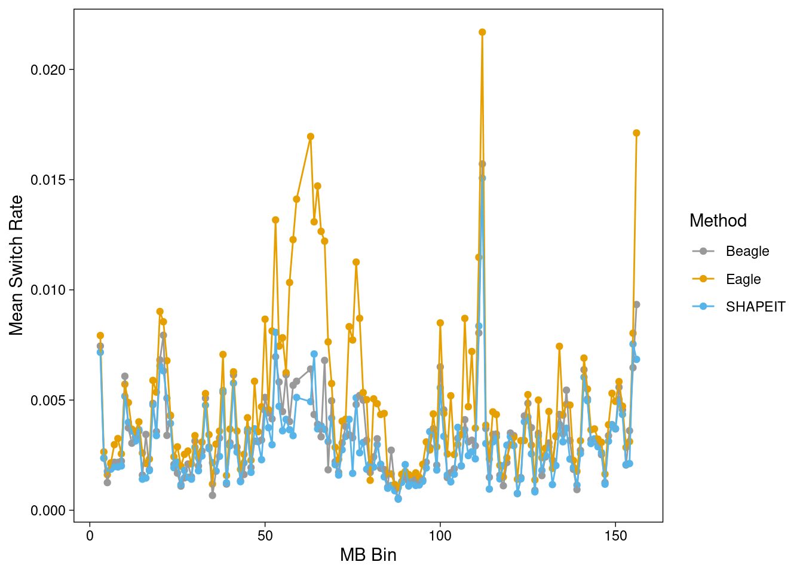
| Version | Author | Date |
|---|---|---|
| e150fe1 | Andy Beck | 2024-11-14 |
df_all_MB %>%
filter(chrom == "X") %>%
mutate(Beagle = f_b / n_het,
Eagle = f_e / n_het,
SHAPEIT = f_s / n_het) %>%
group_by(bin) %>%
summarize(Beagle = mean(Beagle),
Eagle = mean(Eagle),
SHAPEIT = mean(SHAPEIT)) %>%
pivot_longer(-bin, names_to = "method", values_to = "rate") %>%
ggplot(aes(x = bin, y = rate, colour = method)) +
geom_point() +
geom_line() +
scale_color_manual(values = cbPalette) +
xlab("MB Bin") +
ylab("Mean Flip Rate") +
labs(color = "Method")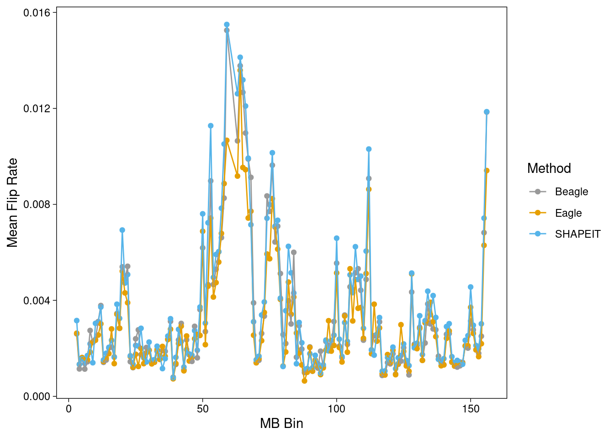
plot_switch_rate_bin(df_all_MB, "X") + scale_colour_manual(values = cbPalette)`summarise()` has grouped output by 'SUPER'. You can override using the
`.groups` argument.
plot_flip_rate_bin(df_all_MB, "X") + scale_colour_manual(values = cbPalette)`summarise()` has grouped output by 'SUPER'. You can override using the
`.groups` argument.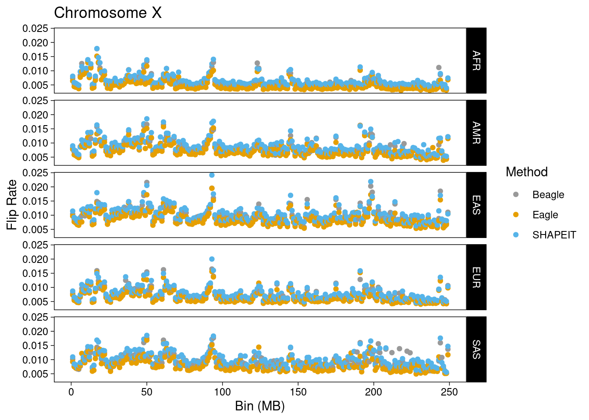
df_all_MB %>%
filter(chrom == "X") %>%
group_by(bin, SUPER) %>%
summarize(flip = mean(f_b / n_het),
switch = mean(s_b / n_het)) %>%
ggplot(aes(flip, switch)) +
geom_point() +
geom_abline(slope = 1, intercept = 0) +
facet_grid(cols = vars(SUPER)) +
xlab("Flip Rate") +
ylab("Switch Rate") +
ggtitle(paste0("Chromosome ", "X"))`summarise()` has grouped output by 'bin'. You can override using the `.groups`
argument.
for(chromo in c(as.character(1:22), "X")){
p <- df_all_MB %>%
filter(chrom == chromo) %>%
group_by(bin, SUPER) %>%
summarize(flip = mean(f_b / n_het),
switch = mean(s_b / n_het)) %>%
ggplot(aes(flip, switch)) +
geom_point() +
geom_abline(slope = 1, intercept = 0) +
facet_grid(cols = vars(SUPER)) +
xlab("Flip Rate") +
ylab("Switch Rate") +
ggtitle(paste0("Chromosome ", chromo, "; Beagle"))
print(p)
}`summarise()` has grouped output by 'bin'. You can override using the `.groups`
argument.
`summarise()` has grouped output by 'bin'. You can override using the `.groups`
argument.
`summarise()` has grouped output by 'bin'. You can override using the `.groups`
argument.
`summarise()` has grouped output by 'bin'. You can override using the `.groups`
argument.
`summarise()` has grouped output by 'bin'. You can override using the `.groups`
argument.
`summarise()` has grouped output by 'bin'. You can override using the `.groups`
argument.
`summarise()` has grouped output by 'bin'. You can override using the `.groups`
argument.
`summarise()` has grouped output by 'bin'. You can override using the `.groups`
argument.
`summarise()` has grouped output by 'bin'. You can override using the `.groups`
argument.
`summarise()` has grouped output by 'bin'. You can override using the `.groups`
argument.
`summarise()` has grouped output by 'bin'. You can override using the `.groups`
argument.
`summarise()` has grouped output by 'bin'. You can override using the `.groups`
argument.
`summarise()` has grouped output by 'bin'. You can override using the `.groups`
argument.
`summarise()` has grouped output by 'bin'. You can override using the `.groups`
argument.
`summarise()` has grouped output by 'bin'. You can override using the `.groups`
argument.
`summarise()` has grouped output by 'bin'. You can override using the `.groups`
argument.
`summarise()` has grouped output by 'bin'. You can override using the `.groups`
argument.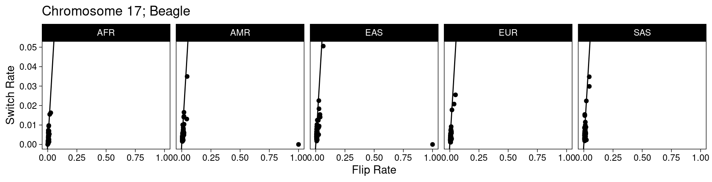
`summarise()` has grouped output by 'bin'. You can override using the `.groups`
argument.
`summarise()` has grouped output by 'bin'. You can override using the `.groups`
argument.
`summarise()` has grouped output by 'bin'. You can override using the `.groups`
argument.
`summarise()` has grouped output by 'bin'. You can override using the `.groups`
argument.
`summarise()` has grouped output by 'bin'. You can override using the `.groups`
argument.
`summarise()` has grouped output by 'bin'. You can override using the `.groups`
argument.
for(chromo in c(as.character(1:22), "X")){
p <- df_all_MB %>%
filter(chrom == chromo) %>%
group_by(bin, SUPER) %>%
summarize(flip = mean(f_e / n_het),
switch = mean(s_e / n_het)) %>%
ggplot(aes(flip, switch)) +
geom_point() +
geom_abline(slope = 1, intercept = 0) +
facet_grid(cols = vars(SUPER)) +
xlab("Flip Rate") +
ylab("Switch Rate") +
ggtitle(paste0("Chromosome ", chromo, "; Eagle"))
print(p)
}`summarise()` has grouped output by 'bin'. You can override using the `.groups`
argument.
`summarise()` has grouped output by 'bin'. You can override using the `.groups`
argument.
`summarise()` has grouped output by 'bin'. You can override using the `.groups`
argument.
`summarise()` has grouped output by 'bin'. You can override using the `.groups`
argument.
`summarise()` has grouped output by 'bin'. You can override using the `.groups`
argument.
`summarise()` has grouped output by 'bin'. You can override using the `.groups`
argument.
`summarise()` has grouped output by 'bin'. You can override using the `.groups`
argument.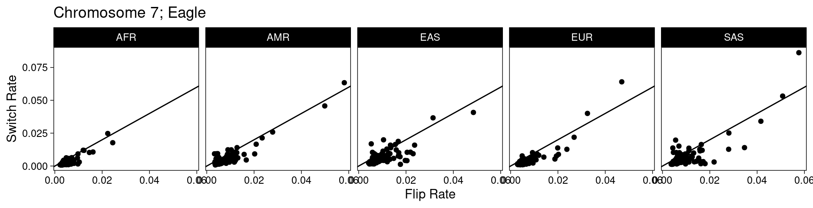
`summarise()` has grouped output by 'bin'. You can override using the `.groups`
argument.
`summarise()` has grouped output by 'bin'. You can override using the `.groups`
argument.
`summarise()` has grouped output by 'bin'. You can override using the `.groups`
argument.
`summarise()` has grouped output by 'bin'. You can override using the `.groups`
argument.
`summarise()` has grouped output by 'bin'. You can override using the `.groups`
argument.
`summarise()` has grouped output by 'bin'. You can override using the `.groups`
argument.
`summarise()` has grouped output by 'bin'. You can override using the `.groups`
argument.
`summarise()` has grouped output by 'bin'. You can override using the `.groups`
argument.
`summarise()` has grouped output by 'bin'. You can override using the `.groups`
argument.
`summarise()` has grouped output by 'bin'. You can override using the `.groups`
argument.
`summarise()` has grouped output by 'bin'. You can override using the `.groups`
argument.
`summarise()` has grouped output by 'bin'. You can override using the `.groups`
argument.
`summarise()` has grouped output by 'bin'. You can override using the `.groups`
argument.
`summarise()` has grouped output by 'bin'. You can override using the `.groups`
argument.
`summarise()` has grouped output by 'bin'. You can override using the `.groups`
argument.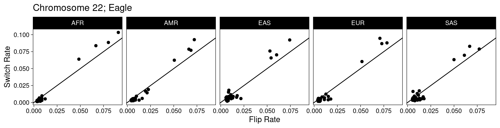
`summarise()` has grouped output by 'bin'. You can override using the `.groups`
argument.
for(chromo in c(as.character(1:22), "X")){
p <- df_all_MB %>%
filter(chrom == chromo) %>%
group_by(bin, SUPER) %>%
summarize(flip = mean(f_s / n_het),
switch = mean(s_s / n_het)) %>%
ggplot(aes(flip, switch)) +
geom_point() +
geom_abline(slope = 1, intercept = 0) +
facet_grid(cols = vars(SUPER)) +
xlab("Flip Rate") +
ylab("Switch Rate") +
ggtitle(paste0("Chromosome ", chromo, "; SHAPEIT"))
print(p)
}`summarise()` has grouped output by 'bin'. You can override using the `.groups`
argument.`summarise()` has grouped output by 'bin'. You can override using the `.groups`
argument.`summarise()` has grouped output by 'bin'. You can override using the `.groups`
argument.`summarise()` has grouped output by 'bin'. You can override using the `.groups`
argument.`summarise()` has grouped output by 'bin'. You can override using the `.groups`
argument.`summarise()` has grouped output by 'bin'. You can override using the `.groups`
argument.`summarise()` has grouped output by 'bin'. You can override using the `.groups`
argument.`summarise()` has grouped output by 'bin'. You can override using the `.groups`
argument.`summarise()` has grouped output by 'bin'. You can override using the `.groups`
argument.`summarise()` has grouped output by 'bin'. You can override using the `.groups`
argument.`summarise()` has grouped output by 'bin'. You can override using the `.groups`
argument.`summarise()` has grouped output by 'bin'. You can override using the `.groups`
argument.`summarise()` has grouped output by 'bin'. You can override using the `.groups`
argument.`summarise()` has grouped output by 'bin'. You can override using the `.groups`
argument.`summarise()` has grouped output by 'bin'. You can override using the `.groups`
argument.`summarise()` has grouped output by 'bin'. You can override using the `.groups`
argument.`summarise()` has grouped output by 'bin'. You can override using the `.groups`
argument.`summarise()` has grouped output by 'bin'. You can override using the `.groups`
argument.`summarise()` has grouped output by 'bin'. You can override using the `.groups`
argument.`summarise()` has grouped output by 'bin'. You can override using the `.groups`
argument.`summarise()` has grouped output by 'bin'. You can override using the `.groups`
argument.`summarise()` has grouped output by 'bin'. You can override using the `.groups`
argument.`summarise()` has grouped output by 'bin'. You can override using the `.groups`
argument.Errors and RR in bins
Switches
df_X_rr <- read_rr("X") %>%
mutate(width = end - begin) %>%
mutate(bin = ceiling(begin / 1e6)) %>%
group_by(bin) %>%
summarize(rr = weighted.mean(rr, na.rm = T))
df_tmp <- df_all_MB %>%
filter(chrom == "X") %>%
mutate(Beagle = s_b / n_het,
Eagle = s_e / n_het,
SHAPEIT = s_s / n_het) %>%
group_by(SUPER, bin) %>%
summarize(Beagle = mean(Beagle),
Eagle = mean(Eagle),
SHAPEIT = mean(SHAPEIT))`summarise()` has grouped output by 'SUPER'. You can override using the
`.groups` argument.df_tmp <- df_tmp %>%
left_join(df_X_rr, by = "bin") %>%
drop_na()
df_tmp <- df_tmp %>%
pivot_longer(Beagle:SHAPEIT, names_to = "Method", values_to = "switch")
coeff <- max(df_tmp$switch) / max(df_tmp$rr)
df_tmp %>%
ggplot(aes(x = bin)) +
geom_line(aes(y = rr)) +
geom_line(aes(y = switch / coeff, color = Method)) +
scale_y_continuous(
name = "Mean cM_MB",
sec.axis = sec_axis(~.*coeff, name = "Switches")
) +
facet_grid(cols = vars(SUPER))
df_X_rr <- read_rr("X") %>%
mutate(bin = ceiling( (end - ((end - begin)/2)) / 1e6),
width = end - begin) %>%
group_by(bin) %>%
summarize(rr = weighted.mean(rr, width, na.rm = T))
df_tmp <- df_all_MB %>%
filter(chrom == "X") %>%
mutate(Beagle = f_b ,
Eagle = f_e ,
SHAPEIT = f_s ) %>%
group_by(SUPER, bin) %>%
summarize(Beagle = mean(Beagle),
Eagle = mean(Eagle),
SHAPEIT = mean(SHAPEIT))`summarise()` has grouped output by 'SUPER'. You can override using the
`.groups` argument.df_tmp <- df_tmp %>%
left_join(df_X_rr, by = "bin") %>%
drop_na()
df_tmp %>%
ungroup() %>%
filter(SUPER == "EUR") %>%
select(Beagle:rr) %>%
corrr::correlate()Correlation computed with
• Method: 'pearson'
• Missing treated using: 'pairwise.complete.obs'# A tibble: 4 × 5
term Beagle Eagle SHAPEIT rr
<chr> <dbl> <dbl> <dbl> <dbl>
1 Beagle NA 0.876 0.954 0.632
2 Eagle 0.876 NA 0.894 0.648
3 SHAPEIT 0.954 0.894 NA 0.637
4 rr 0.632 0.648 0.637 NA EUR
df_X_rr <- read_rr("X") %>%
mutate(bin = ceiling( (end - ((end - begin)/2)) / 1e6),
width = end - begin) %>%
group_by(bin) %>%
summarize(rr = weighted.mean(rr, width, na.rm = T))
df_tmp <- df_all_MB %>% filter(chrom == "X", SUPER == "EUR") %>%
group_by(bin) %>%
summarize(Beagle = sum(s_b),
Eagle = sum(s_e),
SHAPEIT = sum(s_s))
df_tmp <- df_tmp %>%
left_join(df_X_rr, by = "bin")
coeff <- max(df_tmp$Eagle) / max(df_tmp$rr, na.rm = T)
df_tmp %>%
select(bin, Beagle:SHAPEIT, rr) %>%
pivot_longer(Beagle:SHAPEIT, names_to = "stat", values_to = "val") %>%
ggplot(aes(x = bin)) +
geom_line(aes(y = rr)) +
geom_point(aes(y = val / coeff, color = stat)) +
scale_y_continuous(
name = "Weight Mean cM_MB",
sec.axis = sec_axis(~.*coeff, name = "Switches")
) +
scale_color_manual(values=cbPalette)Warning: Removed 6 rows containing missing values or values outside the scale range
(`geom_line()`).
corrr::correlate({df_tmp %>% select(Beagle:SHAPEIT, rr)})Correlation computed with
• Method: 'pearson'
• Missing treated using: 'pairwise.complete.obs'# A tibble: 4 × 5
term Beagle Eagle SHAPEIT rr
<chr> <dbl> <dbl> <dbl> <dbl>
1 Beagle NA 0.978 0.992 0.953
2 Eagle 0.978 NA 0.974 0.917
3 SHAPEIT 0.992 0.974 NA 0.954
4 rr 0.953 0.917 0.954 NA df_X_rr <- read_rr(15) %>%
mutate(bin = ceiling( (end - ((end - begin)/2)) / 1e6),
width = end - begin) %>%
group_by(bin) %>%
summarize(rr = weighted.mean(rr, width, na.rm = T))
df_tmp <- df_all_MB %>% filter(chrom == 15, SUPER == "EUR") %>%
group_by(bin) %>%
summarize(Beagle = sum(s_b),
Eagle = sum(s_e),
SHAPEIT = sum(s_s))
df_tmp <- df_tmp %>%
left_join(df_X_rr, by = "bin")
coeff <- max(df_tmp$Eagle) / max(df_tmp$rr, na.rm = T)
df_tmp %>%
select(bin, Beagle:SHAPEIT, rr) %>%
pivot_longer(Beagle:SHAPEIT, names_to = "stat", values_to = "val") %>%
ggplot(aes(x = bin)) +
geom_line(aes(y = rr)) +
geom_line(aes(y = val / coeff, color = stat)) +
scale_y_continuous(
name = "Weight Mean cM_MB",
sec.axis = sec_axis(~.*coeff, name = "Switches")
) +
scale_color_manual(values=cbPalette)Warning: Removed 18 rows containing missing values or values outside the scale range
(`geom_line()`).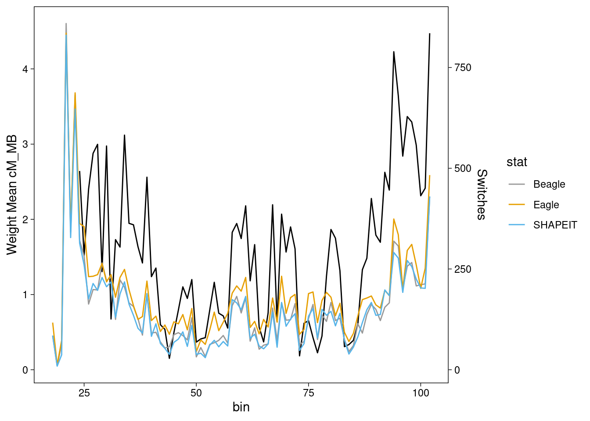
| Version | Author | Date |
|---|---|---|
| 1bb140b | Andy Beck | 2024-11-15 |
corrr::correlate({df_tmp %>% select(Beagle:SHAPEIT, rr)})Correlation computed with
• Method: 'pearson'
• Missing treated using: 'pairwise.complete.obs'# A tibble: 4 × 5
term Beagle Eagle SHAPEIT rr
<chr> <dbl> <dbl> <dbl> <dbl>
1 Beagle NA 0.986 0.993 0.830
2 Eagle 0.986 NA 0.988 0.819
3 SHAPEIT 0.993 0.988 NA 0.859
4 rr 0.830 0.819 0.859 NA EUR flips
df_X_rr <- read_rr("X") %>%
mutate(bin = ceiling( (end - ((end - begin)/2)) / 1e6),
width = end - begin) %>%
group_by(bin) %>%
summarize(rr = weighted.mean(rr, width, na.rm = T))
df_tmp <- df_all_MB %>% filter(chrom == "X", SUPER == "EUR") %>%
group_by(bin) %>%
summarize(Beagle = sum(f_b),
Eagle = sum(f_e),
SHAPEIT = sum(f_s))
df_tmp <- df_tmp %>%
left_join(df_X_rr, by = "bin")
coeff <- max(df_tmp$SHAPEIT) / max(df_tmp$rr, na.rm = T)
df_tmp %>%
select(bin, Beagle:SHAPEIT, rr) %>%
pivot_longer(Beagle:SHAPEIT, names_to = "stat", values_to = "val") %>%
ggplot(aes(x = bin)) +
geom_line(aes(y = rr)) +
geom_line(aes(y = val / coeff, color = stat)) +
scale_y_continuous(
name = "Weight Mean cM_MB",
sec.axis = sec_axis(~.*coeff, name = "Flips")
) +
scale_color_manual(values=cbPalette)Warning: Removed 6 rows containing missing values or values outside the scale range
(`geom_line()`).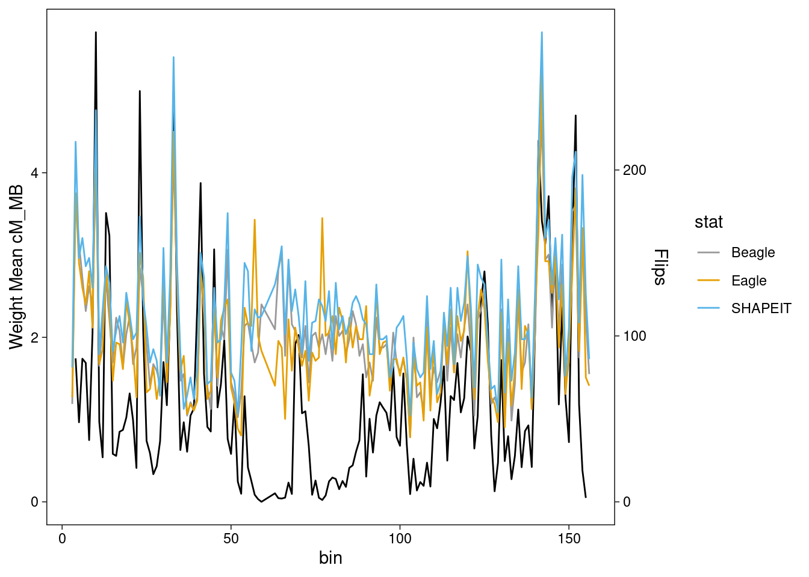
| Version | Author | Date |
|---|---|---|
| 1bb140b | Andy Beck | 2024-11-15 |
corrr::correlate({df_tmp %>% select(Beagle:SHAPEIT, rr)})Correlation computed with
• Method: 'pearson'
• Missing treated using: 'pairwise.complete.obs'# A tibble: 4 × 5
term Beagle Eagle SHAPEIT rr
<chr> <dbl> <dbl> <dbl> <dbl>
1 Beagle NA 0.878 0.955 0.634
2 Eagle 0.878 NA 0.895 0.650
3 SHAPEIT 0.955 0.895 NA 0.638
4 rr 0.634 0.650 0.638 NA Chr 15:
df_X_rr <- read_rr(15) %>%
mutate(bin = ceiling( (end - ((end - begin)/2)) / 1e6),
width = end - begin) %>%
group_by(bin) %>%
summarize(rr = weighted.mean(rr, width, na.rm = T))
df_tmp <- df_all_MB %>% filter(chrom == "15", SUPER == "EUR") %>%
group_by(bin) %>%
summarize(Beagle = sum(f_b),
Eagle = sum(f_e),
SHAPEIT = sum(f_s))
df_tmp <- df_tmp %>%
left_join(df_X_rr, by = "bin")
coeff <- max(df_tmp$SHAPEIT) / max(df_tmp$rr, na.rm = T)
df_tmp %>%
select(bin, Beagle:SHAPEIT, rr) %>%
pivot_longer(Beagle:SHAPEIT, names_to = "stat", values_to = "val") %>%
ggplot(aes(x = bin)) +
geom_line(aes(y = rr)) +
geom_line(aes(y = val / coeff, color = stat)) +
scale_y_continuous(
name = "Weight Mean cM_MB",
sec.axis = sec_axis(~.*coeff, name = "Flips")
) +
scale_color_manual(values=cbPalette)Warning: Removed 18 rows containing missing values or values outside the scale range
(`geom_line()`).
| Version | Author | Date |
|---|---|---|
| 1bb140b | Andy Beck | 2024-11-15 |
corrr::correlate({df_tmp %>% select(Beagle:SHAPEIT, rr)})Correlation computed with
• Method: 'pearson'
• Missing treated using: 'pairwise.complete.obs'# A tibble: 4 × 5
term Beagle Eagle SHAPEIT rr
<chr> <dbl> <dbl> <dbl> <dbl>
1 Beagle NA 0.962 0.986 0.518
2 Eagle 0.962 NA 0.966 0.535
3 SHAPEIT 0.986 0.966 NA 0.515
4 rr 0.518 0.535 0.515 NA for(i in c(as.character(1:22), "X")){
df_X_rr <- read_rr(i) %>%
mutate(bin = ceiling( (end - ((end - begin)/2)) / 1e6),
width = end - begin) %>%
group_by(bin) %>%
summarize(rr = weighted.mean(rr, na.rm = T))
df_X_rr <- df_X_rr %>%
right_join({df_all_MB %>% filter(chrom == i)}, by="bin")
p <- df_X_rr %>%
mutate(Beagle = s_b ,
Eagle = s_e ,
SHAPEIT = s_s ) %>%
group_by(bin, SUPER) %>%
summarise(rr = mean(rr),
Beagle = mean(Beagle),
Eagle = mean(Eagle),
SHAPEIT = mean(SHAPEIT)) %>%
pivot_longer(Beagle:SHAPEIT, names_to = "Method", values_to = "switch_rate") %>%
drop_na() %>%
ggplot(aes(x = rr, y = switch_rate, color = Method)) +
geom_point() +
xlab("Recombination Rate") +
ylab("Switches") +
ggtitle("Switchs and Recombination Rates (MB)", paste0("Chromosome ", i)) +
facet_grid(cols=vars(SUPER))
print(p)
df_X_rr %>%
mutate(Beagle = s_b ,
Eagle = s_e ,
SHAPEIT = s_s ) %>%
group_by(bin, SUPER) %>%
summarise(rr = mean(rr),
Beagle = mean(Beagle),
Eagle = mean(Eagle),
SHAPEIT = mean(SHAPEIT)) %>%
select(-bin) %>%
corrr::correlate() %>%
print()
}`summarise()` has grouped output by 'bin'. You can override using the `.groups`
argument.`summarise()` has grouped output by 'bin'. You can override using the `.groups`
argument.
Adding missing grouping variables: `bin`
Non-numeric variables removed from input: `SUPER`
Correlation computed with • Method: 'pearson' • Missing treated using:
'pairwise.complete.obs'# A tibble: 5 × 6
term bin rr Beagle Eagle SHAPEIT
<chr> <dbl> <dbl> <dbl> <dbl> <dbl>
1 bin NA 0.0161 -0.0912 -0.113 -0.0972
2 rr 0.0161 NA 0.250 0.265 0.257
3 Beagle -0.0912 0.250 NA 0.974 0.983
4 Eagle -0.113 0.265 0.974 NA 0.976
5 SHAPEIT -0.0972 0.257 0.983 0.976 NA `summarise()` has grouped output by 'bin'. You can override using the `.groups`
argument.`summarise()` has grouped output by 'bin'. You can override using the `.groups`
argument.
Adding missing grouping variables: `bin`
Non-numeric variables removed from input: `SUPER`
Correlation computed with • Method: 'pearson' • Missing treated using:
'pairwise.complete.obs'# A tibble: 5 × 6
term bin rr Beagle Eagle SHAPEIT
<chr> <dbl> <dbl> <dbl> <dbl> <dbl>
1 bin NA 0.000885 -0.0998 -0.111 -0.116
2 rr 0.000885 NA 0.314 0.351 0.335
3 Beagle -0.0998 0.314 NA 0.970 0.978
4 Eagle -0.111 0.351 0.970 NA 0.969
5 SHAPEIT -0.116 0.335 0.978 0.969 NA `summarise()` has grouped output by 'bin'. You can override using the `.groups`
argument.`summarise()` has grouped output by 'bin'. You can override using the `.groups`
argument.
Adding missing grouping variables: `bin`
Non-numeric variables removed from input: `SUPER`
Correlation computed with • Method: 'pearson' • Missing treated using:
'pairwise.complete.obs'# A tibble: 5 × 6
term bin rr Beagle Eagle SHAPEIT
<chr> <dbl> <dbl> <dbl> <dbl> <dbl>
1 bin NA -0.0508 -0.0200 -0.0505 -0.0289
2 rr -0.0508 NA 0.503 0.493 0.524
3 Beagle -0.0200 0.503 NA 0.978 0.985
4 Eagle -0.0505 0.493 0.978 NA 0.976
5 SHAPEIT -0.0289 0.524 0.985 0.976 NA `summarise()` has grouped output by 'bin'. You can override using the `.groups`
argument.`summarise()` has grouped output by 'bin'. You can override using the `.groups`
argument.
Adding missing grouping variables: `bin`
Non-numeric variables removed from input: `SUPER`
Correlation computed with • Method: 'pearson' • Missing treated using:
'pairwise.complete.obs'# A tibble: 5 × 6
term bin rr Beagle Eagle SHAPEIT
<chr> <dbl> <dbl> <dbl> <dbl> <dbl>
1 bin NA 0.130 -0.0743 -0.0860 -0.0819
2 rr 0.130 NA 0.407 0.406 0.412
3 Beagle -0.0743 0.407 NA 0.978 0.983
4 Eagle -0.0860 0.406 0.978 NA 0.973
5 SHAPEIT -0.0819 0.412 0.983 0.973 NA `summarise()` has grouped output by 'bin'. You can override using the `.groups`
argument.`summarise()` has grouped output by 'bin'. You can override using the `.groups`
argument.
Adding missing grouping variables: `bin`
Non-numeric variables removed from input: `SUPER`
Correlation computed with • Method: 'pearson' • Missing treated using:
'pairwise.complete.obs'# A tibble: 5 × 6
term bin rr Beagle Eagle SHAPEIT
<chr> <dbl> <dbl> <dbl> <dbl> <dbl>
1 bin NA -0.0288 0.0000420 -0.00272 -0.0131
2 rr -0.0288 NA 0.377 0.375 0.376
3 Beagle 0.0000420 0.377 NA 0.981 0.986
4 Eagle -0.00272 0.375 0.981 NA 0.978
5 SHAPEIT -0.0131 0.376 0.986 0.978 NA `summarise()` has grouped output by 'bin'. You can override using the `.groups`
argument.`summarise()` has grouped output by 'bin'. You can override using the `.groups`
argument.
Adding missing grouping variables: `bin`
Non-numeric variables removed from input: `SUPER`
Correlation computed with • Method: 'pearson' • Missing treated using:
'pairwise.complete.obs'# A tibble: 5 × 6
term bin rr Beagle Eagle SHAPEIT
<chr> <dbl> <dbl> <dbl> <dbl> <dbl>
1 bin NA -0.0415 -0.0905 -0.0862 -0.0979
2 rr -0.0415 NA 0.421 0.382 0.422
3 Beagle -0.0905 0.421 NA 0.973 0.983
4 Eagle -0.0862 0.382 0.973 NA 0.969
5 SHAPEIT -0.0979 0.422 0.983 0.969 NA `summarise()` has grouped output by 'bin'. You can override using the `.groups`
argument.`summarise()` has grouped output by 'bin'. You can override using the `.groups`
argument.
Adding missing grouping variables: `bin`
Non-numeric variables removed from input: `SUPER`
Correlation computed with • Method: 'pearson' • Missing treated using:
'pairwise.complete.obs'# A tibble: 5 × 6
term bin rr Beagle Eagle SHAPEIT
<chr> <dbl> <dbl> <dbl> <dbl> <dbl>
1 bin NA 0.0459 0.0465 0.0103 0.0269
2 rr 0.0459 NA 0.378 0.378 0.391
3 Beagle 0.0465 0.378 NA 0.979 0.984
4 Eagle 0.0103 0.378 0.979 NA 0.975
5 SHAPEIT 0.0269 0.391 0.984 0.975 NA `summarise()` has grouped output by 'bin'. You can override using the `.groups`
argument.`summarise()` has grouped output by 'bin'. You can override using the `.groups`
argument.
Adding missing grouping variables: `bin`
Non-numeric variables removed from input: `SUPER`
Correlation computed with • Method: 'pearson' • Missing treated using:
'pairwise.complete.obs'# A tibble: 5 × 6
term bin rr Beagle Eagle SHAPEIT
<chr> <dbl> <dbl> <dbl> <dbl> <dbl>
1 bin NA -0.114 -0.266 -0.276 -0.278
2 rr -0.114 NA 0.513 0.546 0.522
3 Beagle -0.266 0.513 NA 0.981 0.989
4 Eagle -0.276 0.546 0.981 NA 0.979
5 SHAPEIT -0.278 0.522 0.989 0.979 NA `summarise()` has grouped output by 'bin'. You can override using the `.groups`
argument.`summarise()` has grouped output by 'bin'. You can override using the `.groups`
argument.
Adding missing grouping variables: `bin`
Non-numeric variables removed from input: `SUPER`
Correlation computed with • Method: 'pearson' • Missing treated using:
'pairwise.complete.obs'# A tibble: 5 × 6
term bin rr Beagle Eagle SHAPEIT
<chr> <dbl> <dbl> <dbl> <dbl> <dbl>
1 bin NA 0.00358 -0.147 -0.140 -0.152
2 rr 0.00358 NA -0.0427 0.00847 -0.0316
3 Beagle -0.147 -0.0427 NA 0.983 0.992
4 Eagle -0.140 0.00847 0.983 NA 0.987
5 SHAPEIT -0.152 -0.0316 0.992 0.987 NA `summarise()` has grouped output by 'bin'. You can override using the `.groups`
argument.`summarise()` has grouped output by 'bin'. You can override using the `.groups`
argument.
Adding missing grouping variables: `bin`
Non-numeric variables removed from input: `SUPER`
Correlation computed with • Method: 'pearson' • Missing treated using:
'pairwise.complete.obs'# A tibble: 5 × 6
term bin rr Beagle Eagle SHAPEIT
<chr> <dbl> <dbl> <dbl> <dbl> <dbl>
1 bin NA -0.0893 -0.113 -0.132 -0.112
2 rr -0.0893 NA 0.401 0.405 0.417
3 Beagle -0.113 0.401 NA 0.973 0.979
4 Eagle -0.132 0.405 0.973 NA 0.965
5 SHAPEIT -0.112 0.417 0.979 0.965 NA `summarise()` has grouped output by 'bin'. You can override using the `.groups`
argument.`summarise()` has grouped output by 'bin'. You can override using the `.groups`
argument.
Adding missing grouping variables: `bin`
Non-numeric variables removed from input: `SUPER`
Correlation computed with • Method: 'pearson' • Missing treated using:
'pairwise.complete.obs'# A tibble: 5 × 6
term bin rr Beagle Eagle SHAPEIT
<chr> <dbl> <dbl> <dbl> <dbl> <dbl>
1 bin NA -0.150 -0.0782 -0.101 -0.0720
2 rr -0.150 NA 0.547 0.527 0.539
3 Beagle -0.0782 0.547 NA 0.974 0.982
4 Eagle -0.101 0.527 0.974 NA 0.971
5 SHAPEIT -0.0720 0.539 0.982 0.971 NA `summarise()` has grouped output by 'bin'. You can override using the `.groups`
argument.`summarise()` has grouped output by 'bin'. You can override using the `.groups`
argument.
Adding missing grouping variables: `bin`
Non-numeric variables removed from input: `SUPER`
Correlation computed with • Method: 'pearson' • Missing treated using:
'pairwise.complete.obs'# A tibble: 5 × 6
term bin rr Beagle Eagle SHAPEIT
<chr> <dbl> <dbl> <dbl> <dbl> <dbl>
1 bin NA 0.104 -0.00150 -0.00585 -0.000928
2 rr 0.104 NA 0.297 0.302 0.302
3 Beagle -0.00150 0.297 NA 0.983 0.985
4 Eagle -0.00585 0.302 0.983 NA 0.980
5 SHAPEIT -0.000928 0.302 0.985 0.980 NA `summarise()` has grouped output by 'bin'. You can override using the `.groups`
argument.`summarise()` has grouped output by 'bin'. You can override using the `.groups`
argument.
Adding missing grouping variables: `bin`
Non-numeric variables removed from input: `SUPER`
Correlation computed with • Method: 'pearson' • Missing treated using:
'pairwise.complete.obs'# A tibble: 5 × 6
term bin rr Beagle Eagle SHAPEIT
<chr> <dbl> <dbl> <dbl> <dbl> <dbl>
1 bin NA -0.117 -0.125 -0.115 -0.115
2 rr -0.117 NA 0.503 0.495 0.505
3 Beagle -0.125 0.503 NA 0.984 0.986
4 Eagle -0.115 0.495 0.984 NA 0.983
5 SHAPEIT -0.115 0.505 0.986 0.983 NA `summarise()` has grouped output by 'bin'. You can override using the `.groups`
argument.`summarise()` has grouped output by 'bin'. You can override using the `.groups`
argument.
Adding missing grouping variables: `bin`
Non-numeric variables removed from input: `SUPER`
Correlation computed with • Method: 'pearson' • Missing treated using:
'pairwise.complete.obs'# A tibble: 5 × 6
term bin rr Beagle Eagle SHAPEIT
<chr> <dbl> <dbl> <dbl> <dbl> <dbl>
1 bin NA 0.0393 -0.106 -0.0946 -0.106
2 rr 0.0393 NA 0.415 0.413 0.408
3 Beagle -0.106 0.415 NA 0.991 0.994
4 Eagle -0.0946 0.413 0.991 NA 0.990
5 SHAPEIT -0.106 0.408 0.994 0.990 NA `summarise()` has grouped output by 'bin'. You can override using the `.groups`
argument.`summarise()` has grouped output by 'bin'. You can override using the `.groups`
argument.
Adding missing grouping variables: `bin`
Non-numeric variables removed from input: `SUPER`
Correlation computed with • Method: 'pearson' • Missing treated using:
'pairwise.complete.obs'# A tibble: 5 × 6
term bin rr Beagle Eagle SHAPEIT
<chr> <dbl> <dbl> <dbl> <dbl> <dbl>
1 bin NA -0.0393 -0.114 -0.0776 -0.0934
2 rr -0.0393 NA 0.448 0.429 0.446
3 Beagle -0.114 0.448 NA 0.985 0.992
4 Eagle -0.0776 0.429 0.985 NA 0.986
5 SHAPEIT -0.0934 0.446 0.992 0.986 NA `summarise()` has grouped output by 'bin'. You can override using the `.groups`
argument.`summarise()` has grouped output by 'bin'. You can override using the `.groups`
argument.
Adding missing grouping variables: `bin`
Non-numeric variables removed from input: `SUPER`
Correlation computed with • Method: 'pearson' • Missing treated using:
'pairwise.complete.obs'# A tibble: 5 × 6
term bin rr Beagle Eagle SHAPEIT
<chr> <dbl> <dbl> <dbl> <dbl> <dbl>
1 bin NA -0.156 -0.0650 -0.0746 -0.0823
2 rr -0.156 NA 0.239 0.269 0.259
3 Beagle -0.0650 0.239 NA 0.972 0.985
4 Eagle -0.0746 0.269 0.972 NA 0.969
5 SHAPEIT -0.0823 0.259 0.985 0.969 NA `summarise()` has grouped output by 'bin'. You can override using the `.groups`
argument.`summarise()` has grouped output by 'bin'. You can override using the `.groups`
argument.
Adding missing grouping variables: `bin`
Non-numeric variables removed from input: `SUPER`
Correlation computed with • Method: 'pearson' • Missing treated using:
'pairwise.complete.obs'# A tibble: 5 × 6
term bin rr Beagle Eagle SHAPEIT
<chr> <dbl> <dbl> <dbl> <dbl> <dbl>
1 bin NA -0.160 -0.230 -0.209 -0.222
2 rr -0.160 NA 0.502 0.535 0.517
3 Beagle -0.230 0.502 NA 0.985 0.985
4 Eagle -0.209 0.535 0.985 NA 0.982
5 SHAPEIT -0.222 0.517 0.985 0.982 NA `summarise()` has grouped output by 'bin'. You can override using the `.groups`
argument.`summarise()` has grouped output by 'bin'. You can override using the `.groups`
argument.
Adding missing grouping variables: `bin`
Non-numeric variables removed from input: `SUPER`
Correlation computed with • Method: 'pearson' • Missing treated using:
'pairwise.complete.obs'# A tibble: 5 × 6
term bin rr Beagle Eagle SHAPEIT
<chr> <dbl> <dbl> <dbl> <dbl> <dbl>
1 bin NA 0.0866 -0.190 -0.156 -0.185
2 rr 0.0866 NA 0.346 0.353 0.365
3 Beagle -0.190 0.346 NA 0.985 0.987
4 Eagle -0.156 0.353 0.985 NA 0.983
5 SHAPEIT -0.185 0.365 0.987 0.983 NA `summarise()` has grouped output by 'bin'. You can override using the `.groups`
argument.`summarise()` has grouped output by 'bin'. You can override using the `.groups`
argument.
Adding missing grouping variables: `bin`
Non-numeric variables removed from input: `SUPER`
Correlation computed with • Method: 'pearson' • Missing treated using:
'pairwise.complete.obs'# A tibble: 5 × 6
term bin rr Beagle Eagle SHAPEIT
<chr> <dbl> <dbl> <dbl> <dbl> <dbl>
1 bin NA -0.0762 0.0241 0.00875 0.0202
2 rr -0.0762 NA 0.408 0.403 0.412
3 Beagle 0.0241 0.408 NA 0.987 0.989
4 Eagle 0.00875 0.403 0.987 NA 0.985
5 SHAPEIT 0.0202 0.412 0.989 0.985 NA `summarise()` has grouped output by 'bin'. You can override using the `.groups`
argument.`summarise()` has grouped output by 'bin'. You can override using the `.groups`
argument.
Adding missing grouping variables: `bin`
Non-numeric variables removed from input: `SUPER`
Correlation computed with • Method: 'pearson' • Missing treated using:
'pairwise.complete.obs'# A tibble: 5 × 6
term bin rr Beagle Eagle SHAPEIT
<chr> <dbl> <dbl> <dbl> <dbl> <dbl>
1 bin NA -0.0949 -0.0121 -0.00742 -0.0209
2 rr -0.0949 NA 0.0811 0.0887 0.118
3 Beagle -0.0121 0.0811 NA 0.991 0.990
4 Eagle -0.00742 0.0887 0.991 NA 0.985
5 SHAPEIT -0.0209 0.118 0.990 0.985 NA `summarise()` has grouped output by 'bin'. You can override using the `.groups`
argument.`summarise()` has grouped output by 'bin'. You can override using the `.groups`
argument.
Adding missing grouping variables: `bin`
Non-numeric variables removed from input: `SUPER`
Correlation computed with • Method: 'pearson' • Missing treated using:
'pairwise.complete.obs'# A tibble: 5 × 6
term bin rr Beagle Eagle SHAPEIT
<chr> <dbl> <dbl> <dbl> <dbl> <dbl>
1 bin NA 0.144 -0.254 -0.203 -0.251
2 rr 0.144 NA 0.288 0.313 0.278
3 Beagle -0.254 0.288 NA 0.990 0.995
4 Eagle -0.203 0.313 0.990 NA 0.991
5 SHAPEIT -0.251 0.278 0.995 0.991 NA `summarise()` has grouped output by 'bin'. You can override using the `.groups`
argument.`summarise()` has grouped output by 'bin'. You can override using the `.groups`
argument.
Adding missing grouping variables: `bin`
Non-numeric variables removed from input: `SUPER`
Correlation computed with • Method: 'pearson' • Missing treated using:
'pairwise.complete.obs'# A tibble: 5 × 6
term bin rr Beagle Eagle SHAPEIT
<chr> <dbl> <dbl> <dbl> <dbl> <dbl>
1 bin NA -0.233 -0.362 -0.319 -0.348
2 rr -0.233 NA 0.379 0.363 0.376
3 Beagle -0.362 0.379 NA 0.990 0.992
4 Eagle -0.319 0.363 0.990 NA 0.986
5 SHAPEIT -0.348 0.376 0.992 0.986 NA `summarise()` has grouped output by 'bin'. You can override using the `.groups`
argument.`summarise()` has grouped output by 'bin'. You can override using the `.groups`
argument.
Adding missing grouping variables: `bin`
Non-numeric variables removed from input: `SUPER`
Correlation computed with • Method: 'pearson' • Missing treated using:
'pairwise.complete.obs'# A tibble: 5 × 6
term bin rr Beagle Eagle SHAPEIT
<chr> <dbl> <dbl> <dbl> <dbl> <dbl>
1 bin NA 0.0473 -0.0136 -0.0216 -0.0135
2 rr 0.0473 NA 0.357 0.353 0.365
3 Beagle -0.0136 0.357 NA 0.977 0.993
4 Eagle -0.0216 0.353 0.977 NA 0.973
5 SHAPEIT -0.0135 0.365 0.993 0.973 NA Flips
for(i in c(as.character(1:22), "X")){
df_X_rr <- read_rr(i) %>%
mutate(bin = ceiling( (end - ((end - begin)/2)) / 1e6),
width = end - begin) %>%
group_by(bin) %>%
summarize(rr = weighted.mean(rr, na.rm = T))
df_X_rr <- df_X_rr %>%
right_join({df_all_MB %>% filter(chrom == i)}, by="bin")
p <- df_X_rr %>%
mutate(Beagle = f_b ,
Eagle = f_e ,
SHAPEIT = f_s ) %>%
group_by(bin, SUPER) %>%
summarise(rr = mean(rr),
Beagle = mean(Beagle),
Eagle = mean(Eagle),
SHAPEIT = mean(SHAPEIT)) %>%
pivot_longer(Beagle:SHAPEIT, names_to = "Method", values_to = "switch_rate") %>%
drop_na() %>%
ggplot(aes(x = rr, y = switch_rate, color = Method)) +
geom_point() +
xlab("Recombination Rate") +
ylab("Flips") +
ggtitle("Flips and Recombination Rates (MB)", paste0("Chromosome ", i)) +
facet_grid(cols=vars(SUPER))
print(p)
df_X_rr %>%
mutate(Beagle = f_b ,
Eagle = f_e ,
SHAPEIT = f_s ) %>%
group_by(bin, SUPER) %>%
summarise(rr = mean(rr),
Beagle = mean(Beagle),
Eagle = mean(Eagle),
SHAPEIT = mean(SHAPEIT)) %>%
ungroup() %>%
select(-bin) %>%
corrr::correlate() %>%
print()
}`summarise()` has grouped output by 'bin'. You can override using the `.groups`
argument.`summarise()` has grouped output by 'bin'. You can override using the `.groups`
argument.
Non-numeric variables removed from input: `SUPER`
Correlation computed with • Method: 'pearson' • Missing treated using:
'pairwise.complete.obs'# A tibble: 4 × 5
term rr Beagle Eagle SHAPEIT
<chr> <dbl> <dbl> <dbl> <dbl>
1 rr NA 0.243 0.230 0.256
2 Beagle 0.243 NA 0.934 0.970
3 Eagle 0.230 0.934 NA 0.919
4 SHAPEIT 0.256 0.970 0.919 NA `summarise()` has grouped output by 'bin'. You can override using the `.groups`
argument.`summarise()` has grouped output by 'bin'. You can override using the `.groups`
argument.
Non-numeric variables removed from input: `SUPER`
Correlation computed with • Method: 'pearson' • Missing treated using:
'pairwise.complete.obs'# A tibble: 4 × 5
term rr Beagle Eagle SHAPEIT
<chr> <dbl> <dbl> <dbl> <dbl>
1 rr NA 0.283 0.280 0.303
2 Beagle 0.283 NA 0.910 0.964
3 Eagle 0.280 0.910 NA 0.900
4 SHAPEIT 0.303 0.964 0.900 NA `summarise()` has grouped output by 'bin'. You can override using the `.groups`
argument.`summarise()` has grouped output by 'bin'. You can override using the `.groups`
argument.
Non-numeric variables removed from input: `SUPER`
Correlation computed with • Method: 'pearson' • Missing treated using:
'pairwise.complete.obs'# A tibble: 4 × 5
term rr Beagle Eagle SHAPEIT
<chr> <dbl> <dbl> <dbl> <dbl>
1 rr NA 0.336 0.313 0.352
2 Beagle 0.336 NA 0.931 0.973
3 Eagle 0.313 0.931 NA 0.918
4 SHAPEIT 0.352 0.973 0.918 NA `summarise()` has grouped output by 'bin'. You can override using the `.groups`
argument.`summarise()` has grouped output by 'bin'. You can override using the `.groups`
argument.
Non-numeric variables removed from input: `SUPER`
Correlation computed with • Method: 'pearson' • Missing treated using:
'pairwise.complete.obs'# A tibble: 4 × 5
term rr Beagle Eagle SHAPEIT
<chr> <dbl> <dbl> <dbl> <dbl>
1 rr NA 0.240 0.216 0.238
2 Beagle 0.240 NA 0.925 0.967
3 Eagle 0.216 0.925 NA 0.914
4 SHAPEIT 0.238 0.967 0.914 NA `summarise()` has grouped output by 'bin'. You can override using the `.groups`
argument.`summarise()` has grouped output by 'bin'. You can override using the `.groups`
argument.
Non-numeric variables removed from input: `SUPER`
Correlation computed with • Method: 'pearson' • Missing treated using:
'pairwise.complete.obs'# A tibble: 4 × 5
term rr Beagle Eagle SHAPEIT
<chr> <dbl> <dbl> <dbl> <dbl>
1 rr NA 0.181 0.205 0.198
2 Beagle 0.181 NA 0.930 0.968
3 Eagle 0.205 0.930 NA 0.921
4 SHAPEIT 0.198 0.968 0.921 NA `summarise()` has grouped output by 'bin'. You can override using the `.groups`
argument.`summarise()` has grouped output by 'bin'. You can override using the `.groups`
argument.
Non-numeric variables removed from input: `SUPER`
Correlation computed with • Method: 'pearson' • Missing treated using:
'pairwise.complete.obs'# A tibble: 4 × 5
term rr Beagle Eagle SHAPEIT
<chr> <dbl> <dbl> <dbl> <dbl>
1 rr NA 0.221 0.177 0.233
2 Beagle 0.221 NA 0.877 0.957
3 Eagle 0.177 0.877 NA 0.857
4 SHAPEIT 0.233 0.957 0.857 NA `summarise()` has grouped output by 'bin'. You can override using the `.groups`
argument.`summarise()` has grouped output by 'bin'. You can override using the `.groups`
argument.
Non-numeric variables removed from input: `SUPER`
Correlation computed with • Method: 'pearson' • Missing treated using:
'pairwise.complete.obs'# A tibble: 4 × 5
term rr Beagle Eagle SHAPEIT
<chr> <dbl> <dbl> <dbl> <dbl>
1 rr NA 0.249 0.245 0.260
2 Beagle 0.249 NA 0.947 0.973
3 Eagle 0.245 0.947 NA 0.929
4 SHAPEIT 0.260 0.973 0.929 NA `summarise()` has grouped output by 'bin'. You can override using the `.groups`
argument.`summarise()` has grouped output by 'bin'. You can override using the `.groups`
argument.
Non-numeric variables removed from input: `SUPER`
Correlation computed with • Method: 'pearson' • Missing treated using:
'pairwise.complete.obs'# A tibble: 4 × 5
term rr Beagle Eagle SHAPEIT
<chr> <dbl> <dbl> <dbl> <dbl>
1 rr NA 0.471 0.476 0.479
2 Beagle 0.471 NA 0.961 0.983
3 Eagle 0.476 0.961 NA 0.948
4 SHAPEIT 0.479 0.983 0.948 NA `summarise()` has grouped output by 'bin'. You can override using the `.groups`
argument.`summarise()` has grouped output by 'bin'. You can override using the `.groups`
argument.
Non-numeric variables removed from input: `SUPER`
Correlation computed with • Method: 'pearson' • Missing treated using:
'pairwise.complete.obs'# A tibble: 4 × 5
term rr Beagle Eagle SHAPEIT
<chr> <dbl> <dbl> <dbl> <dbl>
1 rr NA 0.174 0.135 0.197
2 Beagle 0.174 NA 0.968 0.984
3 Eagle 0.135 0.968 NA 0.952
4 SHAPEIT 0.197 0.984 0.952 NA `summarise()` has grouped output by 'bin'. You can override using the `.groups`
argument.`summarise()` has grouped output by 'bin'. You can override using the `.groups`
argument.
Non-numeric variables removed from input: `SUPER`
Correlation computed with • Method: 'pearson' • Missing treated using:
'pairwise.complete.obs'# A tibble: 4 × 5
term rr Beagle Eagle SHAPEIT
<chr> <dbl> <dbl> <dbl> <dbl>
1 rr NA 0.283 0.267 0.302
2 Beagle 0.283 NA 0.912 0.964
3 Eagle 0.267 0.912 NA 0.900
4 SHAPEIT 0.302 0.964 0.900 NA `summarise()` has grouped output by 'bin'. You can override using the `.groups`
argument.`summarise()` has grouped output by 'bin'. You can override using the `.groups`
argument.
Non-numeric variables removed from input: `SUPER`
Correlation computed with • Method: 'pearson' • Missing treated using:
'pairwise.complete.obs'# A tibble: 4 × 5
term rr Beagle Eagle SHAPEIT
<chr> <dbl> <dbl> <dbl> <dbl>
1 rr NA 0.285 0.325 0.316
2 Beagle 0.285 NA 0.942 0.969
3 Eagle 0.325 0.942 NA 0.930
4 SHAPEIT 0.316 0.969 0.930 NA `summarise()` has grouped output by 'bin'. You can override using the `.groups`
argument.`summarise()` has grouped output by 'bin'. You can override using the `.groups`
argument.
Non-numeric variables removed from input: `SUPER`
Correlation computed with • Method: 'pearson' • Missing treated using:
'pairwise.complete.obs'# A tibble: 4 × 5
term rr Beagle Eagle SHAPEIT
<chr> <dbl> <dbl> <dbl> <dbl>
1 rr NA 0.155 0.164 0.163
2 Beagle 0.155 NA 0.938 0.971
3 Eagle 0.164 0.938 NA 0.923
4 SHAPEIT 0.163 0.971 0.923 NA `summarise()` has grouped output by 'bin'. You can override using the `.groups`
argument.`summarise()` has grouped output by 'bin'. You can override using the `.groups`
argument.
Non-numeric variables removed from input: `SUPER`
Correlation computed with • Method: 'pearson' • Missing treated using:
'pairwise.complete.obs'# A tibble: 4 × 5
term rr Beagle Eagle SHAPEIT
<chr> <dbl> <dbl> <dbl> <dbl>
1 rr NA 0.273 0.282 0.267
2 Beagle 0.273 NA 0.929 0.969
3 Eagle 0.282 0.929 NA 0.923
4 SHAPEIT 0.267 0.969 0.923 NA `summarise()` has grouped output by 'bin'. You can override using the `.groups`
argument.`summarise()` has grouped output by 'bin'. You can override using the `.groups`
argument.
Non-numeric variables removed from input: `SUPER`
Correlation computed with • Method: 'pearson' • Missing treated using:
'pairwise.complete.obs'# A tibble: 4 × 5
term rr Beagle Eagle SHAPEIT
<chr> <dbl> <dbl> <dbl> <dbl>
1 rr NA 0.196 0.220 0.232
2 Beagle 0.196 NA 0.939 0.975
3 Eagle 0.220 0.939 NA 0.938
4 SHAPEIT 0.232 0.975 0.938 NA `summarise()` has grouped output by 'bin'. You can override using the `.groups`
argument.`summarise()` has grouped output by 'bin'. You can override using the `.groups`
argument.
Non-numeric variables removed from input: `SUPER`
Correlation computed with • Method: 'pearson' • Missing treated using:
'pairwise.complete.obs'# A tibble: 4 × 5
term rr Beagle Eagle SHAPEIT
<chr> <dbl> <dbl> <dbl> <dbl>
1 rr NA 0.200 0.221 0.203
2 Beagle 0.200 NA 0.958 0.983
3 Eagle 0.221 0.958 NA 0.945
4 SHAPEIT 0.203 0.983 0.945 NA `summarise()` has grouped output by 'bin'. You can override using the `.groups`
argument.`summarise()` has grouped output by 'bin'. You can override using the `.groups`
argument.
Non-numeric variables removed from input: `SUPER`
Correlation computed with • Method: 'pearson' • Missing treated using:
'pairwise.complete.obs'# A tibble: 4 × 5
term rr Beagle Eagle SHAPEIT
<chr> <dbl> <dbl> <dbl> <dbl>
1 rr NA 0.297 0.299 0.294
2 Beagle 0.297 NA 0.974 0.988
3 Eagle 0.299 0.974 NA 0.968
4 SHAPEIT 0.294 0.988 0.968 NA `summarise()` has grouped output by 'bin'. You can override using the `.groups`
argument.`summarise()` has grouped output by 'bin'. You can override using the `.groups`
argument.
Non-numeric variables removed from input: `SUPER`
Correlation computed with • Method: 'pearson' • Missing treated using:
'pairwise.complete.obs'# A tibble: 4 × 5
term rr Beagle Eagle SHAPEIT
<chr> <dbl> <dbl> <dbl> <dbl>
1 rr NA 0.436 0.382 0.442
2 Beagle 0.436 NA 0.959 0.976
3 Eagle 0.382 0.959 NA 0.943
4 SHAPEIT 0.442 0.976 0.943 NA `summarise()` has grouped output by 'bin'. You can override using the `.groups`
argument.`summarise()` has grouped output by 'bin'. You can override using the `.groups`
argument.
Non-numeric variables removed from input: `SUPER`
Correlation computed with • Method: 'pearson' • Missing treated using:
'pairwise.complete.obs'# A tibble: 4 × 5
term rr Beagle Eagle SHAPEIT
<chr> <dbl> <dbl> <dbl> <dbl>
1 rr NA 0.304 0.308 0.311
2 Beagle 0.304 NA 0.967 0.982
3 Eagle 0.308 0.967 NA 0.955
4 SHAPEIT 0.311 0.982 0.955 NA `summarise()` has grouped output by 'bin'. You can override using the `.groups`
argument.`summarise()` has grouped output by 'bin'. You can override using the `.groups`
argument.
Non-numeric variables removed from input: `SUPER`
Correlation computed with • Method: 'pearson' • Missing treated using:
'pairwise.complete.obs'# A tibble: 4 × 5
term rr Beagle Eagle SHAPEIT
<chr> <dbl> <dbl> <dbl> <dbl>
1 rr NA 0.207 0.217 0.255
2 Beagle 0.207 NA 0.937 0.960
3 Eagle 0.217 0.937 NA 0.920
4 SHAPEIT 0.255 0.960 0.920 NA `summarise()` has grouped output by 'bin'. You can override using the `.groups`
argument.`summarise()` has grouped output by 'bin'. You can override using the `.groups`
argument.
Non-numeric variables removed from input: `SUPER`
Correlation computed with • Method: 'pearson' • Missing treated using:
'pairwise.complete.obs'# A tibble: 4 × 5
term rr Beagle Eagle SHAPEIT
<chr> <dbl> <dbl> <dbl> <dbl>
1 rr NA 0.0607 0.0573 0.0980
2 Beagle 0.0607 NA 0.972 0.985
3 Eagle 0.0573 0.972 NA 0.962
4 SHAPEIT 0.0980 0.985 0.962 NA `summarise()` has grouped output by 'bin'. You can override using the `.groups`
argument.`summarise()` has grouped output by 'bin'. You can override using the `.groups`
argument.
Non-numeric variables removed from input: `SUPER`
Correlation computed with • Method: 'pearson' • Missing treated using:
'pairwise.complete.obs'# A tibble: 4 × 5
term rr Beagle Eagle SHAPEIT
<chr> <dbl> <dbl> <dbl> <dbl>
1 rr NA 0.108 0.105 0.108
2 Beagle 0.108 NA 0.969 0.990
3 Eagle 0.105 0.969 NA 0.959
4 SHAPEIT 0.108 0.990 0.959 NA `summarise()` has grouped output by 'bin'. You can override using the `.groups`
argument.`summarise()` has grouped output by 'bin'. You can override using the `.groups`
argument.
Non-numeric variables removed from input: `SUPER`
Correlation computed with • Method: 'pearson' • Missing treated using:
'pairwise.complete.obs'# A tibble: 4 × 5
term rr Beagle Eagle SHAPEIT
<chr> <dbl> <dbl> <dbl> <dbl>
1 rr NA 0.135 0.172 0.150
2 Beagle 0.135 NA 0.930 0.981
3 Eagle 0.172 0.930 NA 0.922
4 SHAPEIT 0.150 0.981 0.922 NA `summarise()` has grouped output by 'bin'. You can override using the `.groups`
argument.`summarise()` has grouped output by 'bin'. You can override using the `.groups`
argument.
Non-numeric variables removed from input: `SUPER`
Correlation computed with • Method: 'pearson' • Missing treated using:
'pairwise.complete.obs'# A tibble: 4 × 5
term rr Beagle Eagle SHAPEIT
<chr> <dbl> <dbl> <dbl> <dbl>
1 rr NA 0.216 0.237 0.218
2 Beagle 0.216 NA 0.929 0.963
3 Eagle 0.237 0.929 NA 0.936
4 SHAPEIT 0.218 0.963 0.936 NA CpG Enrichment
Switches
df_all %>%
filter(chrom == "1") %>%
mutate(Beagle = (n_other_cpg_beagle / n_het_cpg)/(n_other_beagle / n_hets),
Eagle = (n_other_cpg_eagle / n_het_cpg)/(n_other_eagle / n_hets),
SHAPEIT = (n_other_cpg_shapeit / n_het_cpg)/(n_other_shapeit / n_hets)) %>%
select(Beagle:SHAPEIT, SUPER) %>%
pivot_longer(-SUPER, names_to = "Method", values_to = "enrich") %>%
ggplot(aes(x = Method, y = enrich)) +
geom_boxplot() +
ggtitle("Enrichment of Switches at CpG", paste0("Chromosome ", "X")) +
ylab("Enrichment") +
geom_hline(yintercept = 1, colour = "red")df_all %>%
filter(chrom == "X") %>%
mutate(Beagle = (n_flip_cpg_beagle / n_het_cpg)/(n_flip_beagle / n_hets),
Eagle = (n_flip_cpg_eagle / n_het_cpg)/(n_flip_eagle / n_hets),
SHAPEIT = (n_flip_cpg_shapeit / n_het_cpg)/(n_flip_shapeit / n_hets)) %>%
select(Beagle:SHAPEIT, SUPER) %>%
pivot_longer(-SUPER, names_to = "Method", values_to = "enrich") %>%
ggplot(aes(x = Method, y = enrich)) +
geom_boxplot() +
ggtitle("Enrichment of Flips at CpG", paste0("Chromosome ", "X")) +
ylab("Enrichment") +
geom_hline(yintercept = 1, colour = "red") +
facet_grid(cols = vars(SUPER)) +
theme(axis.text.x = element_text(angle = 45, vjust = 1, hjust=1))for(i in c(as.character(1:22), "X") ){
p <- df_all %>%
filter(chrom == i) %>%
mutate(Beagle = (n_other_cpg_beagle / n_het_cpg)/(n_other_beagle / n_hets),
Eagle = (n_other_cpg_eagle / n_het_cpg)/(n_other_eagle / n_hets),
SHAPEIT = (n_other_cpg_shapeit / n_het_cpg)/(n_other_shapeit / n_hets)) %>%
select(Beagle:SHAPEIT, SUPER) %>%
pivot_longer(-SUPER, names_to = "Method", values_to = "enrich") %>%
ggplot(aes(x = Method, y = enrich)) +
geom_boxplot() +
ggtitle("Enrichment of Switches at CpG", paste0("Chromosome ", i)) +
ylab("Enrichment") +
geom_hline(yintercept = 1, colour = "red")
print(p)
}Warning: Removed 87 rows containing non-finite outside the scale range
(`stat_boxplot()`).

Warning: Removed 6 rows containing non-finite outside the scale range
(`stat_boxplot()`).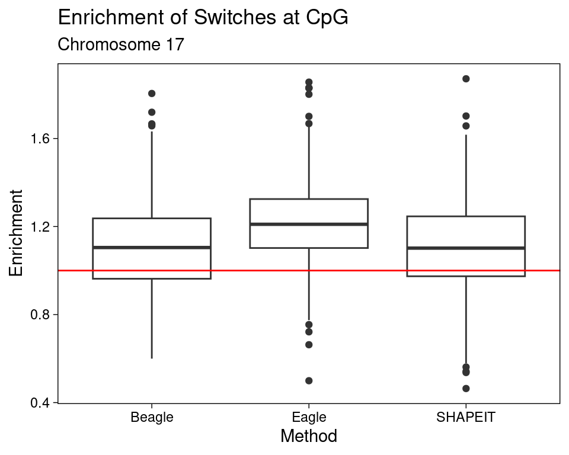
Warning: Removed 3 rows containing non-finite outside the scale range
(`stat_boxplot()`).Warning: Removed 12 rows containing non-finite outside the scale range
(`stat_boxplot()`).Warning: Removed 6 rows containing non-finite outside the scale range
(`stat_boxplot()`).for(i in c(as.character(1:22), "X") ){
p <- df_all %>%
filter(chrom == i) %>%
mutate(Beagle = (n_flip_cpg_beagle / n_het_cpg)/(n_flip_beagle / n_hets),
Eagle = (n_flip_cpg_eagle / n_het_cpg)/(n_flip_eagle / n_hets),
SHAPEIT = (n_flip_cpg_shapeit / n_het_cpg)/(n_flip_shapeit / n_hets)) %>%
select(Beagle:SHAPEIT, SUPER) %>%
pivot_longer(-SUPER, names_to = "Method", values_to = "enrich") %>%
ggplot(aes(x = Method, y = enrich)) +
geom_boxplot() +
ggtitle("Enrichment of Flips at CpG", paste0("Chromosome ", i)) +
ylab("Enrichment") +
geom_hline(yintercept = 1, colour = "red")
print(p)
}Warning: Removed 87 rows containing non-finite outside the scale range
(`stat_boxplot()`).Warning: Removed 6 rows containing non-finite outside the scale range
(`stat_boxplot()`).Warning: Removed 3 rows containing non-finite outside the scale range
(`stat_boxplot()`).Warning: Removed 12 rows containing non-finite outside the scale range
(`stat_boxplot()`).Warning: Removed 6 rows containing non-finite outside the scale range
(`stat_boxplot()`).for(i in c(as.character(1:22), "X") ){
p <- df_all %>%
filter(chrom == i) %>%
mutate(Beagle = (n_other_cpg_beagle / n_het_cpg)/(n_other_beagle / n_hets),
Eagle = (n_other_cpg_eagle / n_het_cpg)/(n_other_eagle / n_hets),
SHAPEIT = (n_other_cpg_shapeit / n_het_cpg)/(n_other_shapeit / n_hets)) %>%
select(Beagle:SHAPEIT, SUPER) %>%
pivot_longer(-SUPER, names_to = "Method", values_to = "enrich") %>%
ggplot(aes(x = Method, y = enrich)) +
geom_boxplot() +
ggtitle("Enrichment of Switches at CpG", paste0("Chromosome ", i)) +
ylab("Enrichment") +
geom_hline(yintercept = 1, colour = "red") +
facet_grid(cols = vars(SUPER)) +
theme(axis.text.x = element_text(angle = 45, vjust = 1, hjust=1))
print(p)
}Warning: Removed 87 rows containing non-finite outside the scale range
(`stat_boxplot()`).Warning: Removed 6 rows containing non-finite outside the scale range
(`stat_boxplot()`).Warning: Removed 3 rows containing non-finite outside the scale range
(`stat_boxplot()`).Warning: Removed 12 rows containing non-finite outside the scale range
(`stat_boxplot()`).Warning: Removed 6 rows containing non-finite outside the scale range
(`stat_boxplot()`).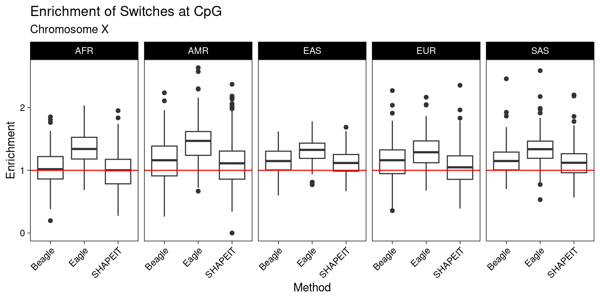
for(i in c(as.character(1:22), "X") ){
p <- df_all %>%
filter(chrom == i) %>%
mutate(Beagle = (n_flip_cpg_beagle / n_het_cpg)/(n_flip_beagle / n_hets),
Eagle = (n_flip_cpg_eagle / n_het_cpg)/(n_flip_eagle / n_hets),
SHAPEIT = (n_flip_cpg_shapeit / n_het_cpg)/(n_flip_shapeit / n_hets)) %>%
select(Beagle:SHAPEIT, SUPER) %>%
pivot_longer(-SUPER, names_to = "Method", values_to = "enrich") %>%
ggplot(aes(x = Method, y = enrich)) +
geom_boxplot() +
ggtitle("Enrichment of Flips at CpG", paste0("Chromosome ", i)) +
ylab("Enrichment") +
geom_hline(yintercept = 1, colour = "red") +
facet_grid(cols = vars(SUPER)) +
theme(axis.text.x = element_text(angle = 45, vjust = 1, hjust=1))
print(p)
}Warning: Removed 87 rows containing non-finite outside the scale range
(`stat_boxplot()`).Warning: Removed 6 rows containing non-finite outside the scale range
(`stat_boxplot()`).Warning: Removed 3 rows containing non-finite outside the scale range
(`stat_boxplot()`).Warning: Removed 12 rows containing non-finite outside the scale range
(`stat_boxplot()`).Warning: Removed 6 rows containing non-finite outside the scale range
(`stat_boxplot()`).
sessionInfo()R version 4.5.1 (2025-06-13)
Platform: x86_64-pc-linux-gnu
Running under: Ubuntu 22.04.5 LTS
Matrix products: default
BLAS: /usr/lib/x86_64-linux-gnu/openblas-pthread/libblas.so.3
LAPACK: /usr/lib/x86_64-linux-gnu/openblas-pthread/libopenblasp-r0.3.20.so; LAPACK version 3.10.0
locale:
[1] LC_CTYPE=en_US.UTF-8 LC_NUMERIC=C
[3] LC_TIME=en_US.UTF-8 LC_COLLATE=en_US.UTF-8
[5] LC_MONETARY=en_US.UTF-8 LC_MESSAGES=en_US.UTF-8
[7] LC_PAPER=en_US.UTF-8 LC_NAME=C
[9] LC_ADDRESS=C LC_TELEPHONE=C
[11] LC_MEASUREMENT=en_US.UTF-8 LC_IDENTIFICATION=C
time zone: America/New_York
tzcode source: system (glibc)
attached base packages:
[1] grid stats graphics grDevices utils datasets methods
[8] base
other attached packages:
[1] gridExtra_2.3 gtsummary_2.1.0 yaml_2.3.10 lubridate_1.9.4
[5] forcats_1.0.0 stringr_1.5.1 dplyr_1.1.4 purrr_1.0.4
[9] readr_2.1.5 tidyr_1.3.1 tibble_3.2.1 ggplot2_3.5.2
[13] tidyverse_2.0.0 workflowr_1.7.1
loaded via a namespace (and not attached):
[1] gtable_0.3.6 xfun_0.52 bslib_0.9.0 processx_3.8.6
[5] corrr_0.4.4 callr_3.7.6 tzdb_0.5.0 vctrs_0.6.5
[9] tools_4.5.1 ps_1.9.0 generics_0.1.3 yulab.utils_0.2.0
[13] parallel_4.5.1 pkgconfig_2.0.3 ggplotify_0.1.2 lifecycle_1.0.4
[17] farver_2.1.2 compiler_4.5.1 git2r_0.36.2 munsell_0.5.1
[21] getPass_0.2-4 httpuv_1.6.15 htmltools_0.5.8.1 sass_0.4.10
[25] later_1.4.1 pillar_1.10.1 crayon_1.5.3 jquerylib_0.1.4
[29] whisker_0.4.1 cachem_1.1.0 tidyselect_1.2.1 digest_0.6.37
[33] stringi_1.8.4 labeling_0.4.3 cowplot_1.1.3 rprojroot_2.1.1
[37] fastmap_1.2.0 archive_1.1.12 colorspace_2.1-1 cli_3.6.4
[41] magrittr_2.0.3 utf8_1.2.4 withr_3.0.2 scales_1.3.0
[45] promises_1.3.2 bit64_4.6.0-1 timechange_0.3.0 rmarkdown_2.29
[49] httr_1.4.7 bit_4.6.0 hms_1.1.3 evaluate_1.0.3
[53] knitr_1.50 gridGraphics_0.5-1 rlang_1.1.5 Rcpp_1.0.14
[57] glue_1.8.0 rstudioapi_0.17.1 vroom_1.6.5 jsonlite_2.0.0
[61] R6_2.6.1 fs_1.6.5